ChatGPT 3回目の依頼
描けなかった 11枚・描き直す 2枚・場面のうち ChatGPT でも描けそうな 262枚。
リポジトリを触れる Astra に頼むとき：「character-motion-v1/chatgpt/round3/ASTRA.md を読んで、そのとおりに作業して」と送るだけ（ASTRA.md）。
リポジトリを触れる Astra に頼むとき：「character-motion-v1/chatgpt/round3/ASTRA.md を読んで、そのとおりに作業して」と送るだけ（ASTRA.md）。
アリア（戦士） 71枚・6回
最初に1回だけ送る文（見た目の画像を添付）
添付する画像：warrior-source.png

これから、2Dゲームのキャラクターのアニメーション用の絵を、何枚かずつまとめてお願いします。 ・添付の画像のキャラクター「アリア」を、同じ絵柄・同じ頭身（小さめのデフォルメ）・同じ衣装と色で描いてください。 ・持ち物と特徴：右手に剣、左腕に丸い盾（青い模様）。腰に剣の鞘。 ・毎回、番号つきの「ポーズ一覧」の画像を添付し、番号ごとに向きと動きを書きます。番号1つにつき1枚の別々の画像を描いてください（1枚に並べない）。 ・姿勢・向き・手足と持ち物の位置は、ポーズ一覧の図（マネキン）に合わせてください。図の色の意味：青＝キャラクター本人の右半身、橙＝左半身、灰色＝胴と頭。図の線・色・関節の丸・番号は描かないでください。 ・1枚ごとに正方形（1024×1024）。全身が入るように上下左右に1割くらいの余白をとり、立っているときの足元は、どの絵も画像の下から1割くらいの高さにそろえてください。キャラクターの大きさも、どの絵でもそろえてください。 ・背景は透明（できなければ真っ白の無地）。影・床・効果線・文字・枠は描かないでください。 ・ファイル名は、番号ごとに指定する名前にしてください。できれば全部を1つのZIPにまとめてください。 ・描いた絵を縮小・減色・切り抜きしないでください（描いたままの PNG）。 ・今回は、何かに押さえられたり、床に倒れたりする場面の絵です。図の色の付いた線・輪・塊・泡などは、押さえているものの位置です。番号ごとに書く「押さえているものの見た目」で、その位置に一緒に描いてください（図と同じ色では描かない）。 ・「言葉」の欄は、見た目や顔・様子の言葉（英語）です。絵に反映してください。 ・描けない、または描かない方がよいと判断した番号は、飛ばしてかまいません。飛ばした番号と理由を、最後にまとめて教えてください。 わかったら「OK」とだけ返してください。
まとめて送る文（そのポーズ一覧を添付）
1. 振りかぶったまま止まり、剣を下ろして目をそらす／袈裟懸け（右上から左下への斜め斬り）／横一文字（右から左への水平斬り）／突き 7枚
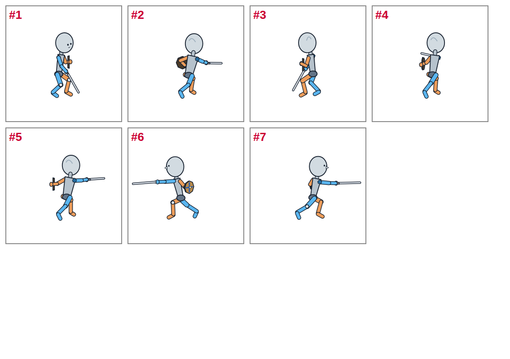
ポーズ一覧を保存

描き直し：振りかぶったまま止まり、剣を下ろして目をそらす／袈裟懸け（右上から左下への斜め斬り）／横一文字（右から左への水平斬り）／突き：7枚 添付のポーズ一覧の番号どおりに、1枚ずつ別の画像で描いてください。決まりは最初の文のとおりです。 ★の付いた番号は描き直しです。キャラクターの大きさは、ほかのコマと同じにしてください（剣や杖が長くても体を縮めない。持ち物の先が画像の端に近くてもよいが、切れないように）。前回、安全判定で止まったものは、衣装はそのままに、向きや腕・持ち物・影で肌の出る所が自然に目立たない描き方にしてください。 後ろ向き・斜め後ろ向きのコマは、見た目の画像の後ろ向きの絵を参考に。顔はほとんど見えません。 #1 → aria__swing_abandon__right__5.png 振りかぶったまま止まり、剣を下ろして目をそらす／向き：真横（画面の右を向く横顔）／7コマのうち6コマ目（目をそらす） ★前回は画像生成の安全判定で止まった point down by her knee; she looks away #2 → aria__kesa__up_right__6.png 袈裟懸け（右上から左下への斜め斬り）／向き：斜め後ろ（背中が見え、画面の右奥を向く）／12コマのうち7コマ目（命中）【後ろから見た絵】 ★前回は画像生成の安全判定で止まった impact: wrist snapped, arm and blade in line, cutting down to her left #3 → aria__swing_abandon__left__5.png 振りかぶったまま止まり、剣を下ろして目をそらす／向き：真横（画面の左を向く横顔）／7コマのうち6コマ目（目をそらす） ★前回は画像生成の安全判定で止まった point down by her knee; she looks away #4 → aria__yoko__up_right__7.png 横一文字（右から左への水平斬り）／向き：斜め後ろ（背中が見え、画面の右奥を向く）／12コマのうち8コマ目（振り抜き）【後ろから見た絵】 ★前回は画像生成の安全判定で止まった carried round to her left #5 → aria__thrust__up_right__4.png 突き／向き：斜め後ろ（背中が見え、画面の右奥を向く）／9コマのうち5コマ目（命中）【後ろから見た絵】 ★前回は画像生成の安全判定で止まった full extension: arm and blade one line, rear leg straight, shield arm thrown back #6 → aria__thrust__left__4.png 突き／向き：真横（画面の左を向く横顔）／9コマのうち5コマ目（命中） ★前に描いた絵は、キャラクターがほかのコマより3割ほど小さかった full extension: arm and blade one line, rear leg straight, shield arm thrown back #7 → aria__yoko__right__6.png 横一文字（右から左への水平斬り）／向き：真横（画面の右を向く横顔）／12コマのうち7コマ目（命中） ★前に描いた絵は、キャラクターがほかのコマより3割ほど小さかった impact: blade level at her chest, in line with the arm
2. 押されて尻もちをつき、仰向けに倒れる／仰向けから起き上がる／後ろから腕ごと胴を抱きすくめられ、もがく／柔らかい塊に足元から腰まで沈んでいく 16枚
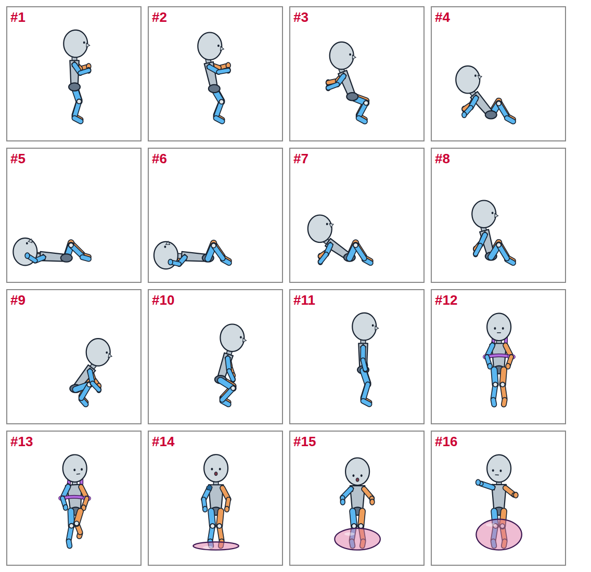
ポーズ一覧を保存

押されて尻もちをつき、仰向けに倒れる／仰向けから起き上がる／後ろから腕ごと胴を抱きすくめられ、もがく／柔らかい塊に足元から腰まで沈んでいく：16枚 添付のポーズ一覧の番号どおりに、1枚ずつ別の画像で描いてください。決まりは最初の文のとおりです。 #1 → aria__down_fall_back__right__0.png 押されて尻もちをつき、仰向けに倒れる／向き：真横（画面の右を向く横顔）／19コマのうち1コマ目（立つ） 体勢：立つ → 仰向け／腕：前に出す → 後ろにつく／脚：よろける／動き：押されてよろける → 尻もち → 仰向けに倒れる 言葉：translucent bright aqua water body, white foam rim, thick flowing water tendrils, forceful push from front, startled bracing reaction #2 → aria__down_fall_back__right__2.png 押されて尻もちをつき、仰向けに倒れる／向き：真横（画面の右を向く横顔）／19コマのうち3コマ目（押される） 体勢：立つ → 仰向け／腕：前に出す → 後ろにつく／脚：よろける／動き：押されてよろける → 尻もち → 仰向けに倒れる 言葉：translucent bright aqua water body, white foam rim, thick flowing water tendrils, forceful push from front, startled bracing reaction #3 → aria__down_fall_back__right__8.png 押されて尻もちをつき、仰向けに倒れる／向き：真横（画面の右を向く横顔）／19コマのうち9コマ目（よろける） 体勢：立つ → 仰向け／腕：前に出す → 後ろにつく／脚：よろける／動き：押されてよろける → 尻もち → 仰向けに倒れる 言葉：translucent bright aqua water body, white foam rim, thick flowing water tendrils, forceful push from front, startled bracing reaction #4 → aria__down_fall_back__right__12.png 押されて尻もちをつき、仰向けに倒れる／向き：真横（画面の右を向く横顔）／19コマのうち13コマ目（尻もち） 体勢：立つ → 仰向け／腕：前に出す → 後ろにつく／脚：よろける／動き：押されてよろける → 尻もち → 仰向けに倒れる 言葉：translucent bright aqua water body, white foam rim, thick flowing water tendrils, forceful push from front, startled bracing reaction #5 → aria__down_fall_back__right__17.png 押されて尻もちをつき、仰向けに倒れる／向き：真横（画面の右を向く横顔）／19コマのうち18コマ目（倒れる） 体勢：立つ → 仰向け／腕：前に出す → 後ろにつく／脚：よろける／動き：押されてよろける → 尻もち → 仰向けに倒れる 言葉：translucent bright aqua water body, white foam rim, thick flowing water tendrils, forceful push from front, startled bracing reaction #6 → aria__get_up__right__0.png 仰向けから起き上がる／向き：真横（画面の右を向く横顔）／19コマのうち1コマ目（仰向け） 体勢：仰向け → 立つ／腕：肘をつく → 手をつく／脚：膝を立てる → しゃがむ → 立つ／動き：起き上がって立つ（真横から見た絵） 言葉：refocusing eyes, pushing body upward, recovering balance, determined expression, steadying breath, alert expression returning, furrowed brows, regaining composure #7 → aria__get_up__right__4.png 仰向けから起き上がる／向き：真横（画面の右を向く横顔）／19コマのうち5コマ目（肘をつく） 体勢：仰向け → 立つ／腕：肘をつく → 手をつく／脚：膝を立てる → しゃがむ → 立つ／動き：起き上がって立つ（真横から見た絵） 言葉：refocusing eyes, pushing body upward, recovering balance, determined expression, steadying breath, alert expression returning, furrowed brows, regaining composure #8 → aria__get_up__right__8.png 仰向けから起き上がる／向き：真横（画面の右を向く横顔）／19コマのうち9コマ目（座る） 体勢：仰向け → 立つ／腕：肘をつく → 手をつく／脚：膝を立てる → しゃがむ → 立つ／動き：起き上がって立つ（真横から見た絵） 言葉：refocusing eyes, pushing body upward, recovering balance, determined expression, steadying breath, alert expression returning, furrowed brows, regaining composure #9 → aria__get_up__right__13.png 仰向けから起き上がる／向き：真横（画面の右を向く横顔）／19コマのうち14コマ目（しゃがむ） 体勢：仰向け → 立つ／腕：肘をつく → 手をつく／脚：膝を立てる → しゃがむ → 立つ／動き：起き上がって立つ（真横から見た絵） 言葉：refocusing eyes, pushing body upward, recovering balance, determined expression, steadying breath, alert expression returning, furrowed brows, regaining composure #10 → aria__get_up__right__16.png 仰向けから起き上がる／向き：真横（画面の右を向く横顔）／19コマのうち17コマ目（立ち上がる） 体勢：仰向け → 立つ／腕：肘をつく → 手をつく／脚：膝を立てる → しゃがむ → 立つ／動き：起き上がって立つ（真横から見た絵） 言葉：refocusing eyes, pushing body upward, recovering balance, determined expression, steadying breath, alert expression returning, furrowed brows, regaining composure #11 → aria__get_up__right__18.png 仰向けから起き上がる／向き：真横（画面の右を向く横顔）／19コマのうち19コマ目（立つ） 体勢：仰向け → 立つ／腕：肘をつく → 手をつく／脚：膝を立てる → しゃがむ → 立つ／動き：起き上がって立つ（真横から見た絵） 言葉：refocusing eyes, pushing body upward, recovering balance, determined expression, steadying breath, alert expression returning, furrowed brows, regaining composure #12 → aria__held_from_behind__front__0.png 後ろから腕ごと胴を抱きすくめられ、もがく／向き：正面（こちらを向く）／8コマのうち1コマ目 体勢：立つ／腕：体の横に押さえつけられる／脚：足を交互に蹴る／動き：身をよじる。足を蹴る。振り返る 押さえられている所：両肩・両肘（後ろから抱えられる） 押さえているものの見た目：large gray stone golem arms, rough stone surface, thick heavy forearms 言葉：large gray stone golem arms, rough stone surface, thick heavy forearms, arms and torso firmly held from behind, struggling #13 → aria__held_from_behind__front__2.png 後ろから腕ごと胴を抱きすくめられ、もがく／向き：正面（こちらを向く）／8コマのうち3コマ目 体勢：立つ／腕：体の横に押さえつけられる／脚：足を交互に蹴る／動き：身をよじる。足を蹴る。振り返る 押さえられている所：両肩・両肘（後ろから抱えられる） 押さえているものの見た目：large gray stone golem arms, rough stone surface, thick heavy forearms 言葉：large gray stone golem arms, rough stone surface, thick heavy forearms, arms and torso firmly held from behind, struggling #14 → aria__engulf_sink__front__0.png 柔らかい塊に足元から腰まで沈んでいく／向き：正面（こちらを向く）／10コマのうち1コマ目（足元） 体勢：立つ／腕：広げて釣り合いを取る／脚：足元 → 膝 → 太ももまで沈む／動き：下を見る。片脚を抜こうとするが抜けない 押さえられている所：足元から太もも（床の塊の中） 押さえているものの見た目：chrome-silver mirror slime, pale cyan reflections, smooth glossy surface, thick rounded slime mass 言葉：chrome-silver mirror slime, pale cyan reflections, smooth glossy surface, thick rounded slime mass, legs surrounded by soft slime #15 → aria__engulf_sink__front__3.png 柔らかい塊に足元から腰まで沈んでいく／向き：正面（こちらを向く）／10コマのうち4コマ目（膝まで） 体勢：立つ／腕：広げて釣り合いを取る／脚：足元 → 膝 → 太ももまで沈む／動き：下を見る。片脚を抜こうとするが抜けない 押さえられている所：足元から太もも（床の塊の中） 押さえているものの見た目：chrome-silver mirror slime, pale cyan reflections, smooth glossy surface, thick rounded slime mass 言葉：chrome-silver mirror slime, pale cyan reflections, smooth glossy surface, thick rounded slime mass, legs surrounded by soft slime #16 → aria__engulf_sink__front__6.png 柔らかい塊に足元から腰まで沈んでいく／向き：正面（こちらを向く）／10コマのうち7コマ目（もがく） 体勢：立つ／腕：広げて釣り合いを取る／脚：足元 → 膝 → 太ももまで沈む／動き：下を見る。片脚を抜こうとするが抜けない 押さえられている所：足元から太もも（床の塊の中） 押さえているものの見た目：chrome-silver mirror slime, pale cyan reflections, smooth glossy surface, thick rounded slime mass 言葉：chrome-silver mirror slime, pale cyan reflections, smooth glossy surface, thick rounded slime mass, legs surrounded by soft slime
3. 我に返って口元をぬぐい、一歩下がる／座り込んだ所から立ち上がる／腰まで沈んだまま、上体をひねって抜け出そうとする／足首をつかまれて後ろへ引かれ、よろけて四つん這いになる 15枚
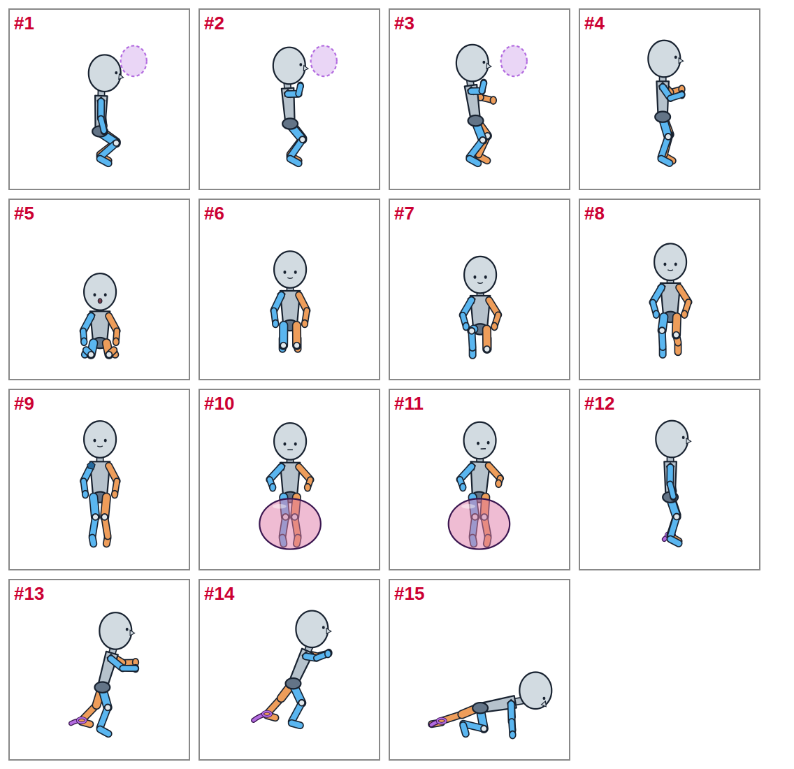
ポーズ一覧を保存

我に返って口元をぬぐい、一歩下がる／座り込んだ所から立ち上がる／腰まで沈んだまま、上体をひねって抜け出そうとする／足首をつかまれて後ろへ引かれ、よろけて四つん這いになる：15枚 添付のポーズ一覧の番号どおりに、1枚ずつ別の画像で描いてください。決まりは最初の文のとおりです。 #1 → aria__kiss_recover__right__0.png 我に返って口元をぬぐい、一歩下がる／向き：真横（画面の右を向く横顔）／11コマのうち1コマ目（ふらつく） 体勢：立つ／腕：手の甲で口をぬぐう。片手を前に出す／脚：一歩下がる／動き：我に返る → 口をぬぐう → 下がって構える 言葉：refocusing eyes, wiping mouth, alert expression, cautious backward step, defensive readiness, alert expression returning, furrowed brows, steadying breath, regaining composure, determined expression #2 → aria__kiss_recover__right__5.png 我に返って口元をぬぐい、一歩下がる／向き：真横（画面の右を向く横顔）／11コマのうち6コマ目（ぬぐう） 体勢：立つ／腕：手の甲で口をぬぐう。片手を前に出す／脚：一歩下がる／動き：我に返る → 口をぬぐう → 下がって構える 言葉：refocusing eyes, wiping mouth, alert expression, cautious backward step, defensive readiness, alert expression returning, furrowed brows, steadying breath, regaining composure, determined expression #3 → aria__kiss_recover__right__8.png 我に返って口元をぬぐい、一歩下がる／向き：真横（画面の右を向く横顔）／11コマのうち9コマ目（下がる） 体勢：立つ／腕：手の甲で口をぬぐう。片手を前に出す／脚：一歩下がる／動き：我に返る → 口をぬぐう → 下がって構える 言葉：refocusing eyes, wiping mouth, alert expression, cautious backward step, defensive readiness, alert expression returning, furrowed brows, steadying breath, regaining composure, determined expression #4 → aria__kiss_recover__right__10.png 我に返って口元をぬぐい、一歩下がる／向き：真横（画面の右を向く横顔）／11コマのうち11コマ目（構え） 体勢：立つ／腕：手の甲で口をぬぐう。片手を前に出す／脚：一歩下がる／動き：我に返る → 口をぬぐう → 下がって構える 言葉：refocusing eyes, wiping mouth, alert expression, cautious backward step, defensive readiness, alert expression returning, furrowed brows, steadying breath, regaining composure, determined expression #5 → aria__sit_recover__front__2.png 座り込んだ所から立ち上がる／向き：正面（こちらを向く）／14コマのうち3コマ目（手をつく） 体勢：女の子座り → 立つ／腕：前に手をつく／脚：膝立ち → 片膝 → 立つ／動き：立ち上がる 言葉：recovering strength, determined expression, pushing upward, unsteady balance, refocusing eyes, alert expression returning, furrowed brows, steadying breath, regaining composure #6 → aria__sit_recover__front__5.png 座り込んだ所から立ち上がる／向き：正面（こちらを向く）／14コマのうち6コマ目（膝立ち） 体勢：女の子座り → 立つ／腕：前に手をつく／脚：膝立ち → 片膝 → 立つ／動き：立ち上がる 言葉：recovering strength, determined expression, pushing upward, unsteady balance, refocusing eyes, alert expression returning, furrowed brows, steadying breath, regaining composure #7 → aria__sit_recover__front__9.png 座り込んだ所から立ち上がる／向き：正面（こちらを向く）／14コマのうち10コマ目（片膝） 体勢：女の子座り → 立つ／腕：前に手をつく／脚：膝立ち → 片膝 → 立つ／動き：立ち上がる 言葉：recovering strength, determined expression, pushing upward, unsteady balance, refocusing eyes, alert expression returning, furrowed brows, steadying breath, regaining composure #8 → aria__sit_recover__front__11.png 座り込んだ所から立ち上がる／向き：正面（こちらを向く）／14コマのうち12コマ目（立ち上がる） 体勢：女の子座り → 立つ／腕：前に手をつく／脚：膝立ち → 片膝 → 立つ／動き：立ち上がる 言葉：recovering strength, determined expression, pushing upward, unsteady balance, refocusing eyes, alert expression returning, furrowed brows, steadying breath, regaining composure #9 → aria__sit_recover__front__13.png 座り込んだ所から立ち上がる／向き：正面（こちらを向く）／14コマのうち14コマ目（立つ） 体勢：女の子座り → 立つ／腕：前に手をつく／脚：膝立ち → 片膝 → 立つ／動き：立ち上がる 言葉：recovering strength, determined expression, pushing upward, unsteady balance, refocusing eyes, alert expression returning, furrowed brows, steadying breath, regaining composure #10 → aria__engulf_struggle__front__0.png 腰まで沈んだまま、上体をひねって抜け出そうとする／向き：正面（こちらを向く）／8コマのうち1コマ目 体勢：腰まで埋まる／腕：片手ずつ塊を押す／脚：動かない／動き：上体をひねって抜け出そうとする 押さえられている所：腰から下（塊の中） 押さえているものの見た目：chrome-silver mirror slime, pale cyan reflections, smooth glossy surface, thick rounded slime mass 言葉：chrome-silver mirror slime, pale cyan reflections, smooth glossy surface, thick rounded slime mass, lower body trapped inside, twisting to escape #11 → aria__engulf_struggle__front__6.png 腰まで沈んだまま、上体をひねって抜け出そうとする／向き：正面（こちらを向く）／8コマのうち7コマ目 体勢：腰まで埋まる／腕：片手ずつ塊を押す／脚：動かない／動き：上体をひねって抜け出そうとする 押さえられている所：腰から下（塊の中） 押さえているものの見た目：chrome-silver mirror slime, pale cyan reflections, smooth glossy surface, thick rounded slime mass 言葉：chrome-silver mirror slime, pale cyan reflections, smooth glossy surface, thick rounded slime mass, lower body trapped inside, twisting to escape #12 → aria__ankle_grabbed__right__0.png 足首をつかまれて後ろへ引かれ、よろけて四つん這いになる／向き：真横（画面の右を向く横顔）／17コマのうち1コマ目（つかまれる） 体勢：立つ → 四つん這い／腕：振り回す → 両手をつく／脚：片足跳び → 片膝をつく／動き：足首をつかまれ後ろへ引かれる → 前のめり → 倒れる（真横から見た絵） 押さえられている所：左の足首（後ろから） 言葉：pale bluish-gray hand, short rounded nails, cool desaturated skin, firm grip around ankle, pulling backward, tense startled expression, furrowed brows, clenched jaw, body suddenly tensed, resisting, alert eyes #13 → aria__ankle_grabbed__right__4.png 足首をつかまれて後ろへ引かれ、よろけて四つん這いになる／向き：真横（画面の右を向く横顔）／17コマのうち5コマ目（引かれる） 体勢：立つ → 四つん這い／腕：振り回す → 両手をつく／脚：片足跳び → 片膝をつく／動き：足首をつかまれ後ろへ引かれる → 前のめり → 倒れる（真横から見た絵） 押さえられている所：左の足首（後ろから） 言葉：pale bluish-gray hand, short rounded nails, cool desaturated skin, firm grip around ankle, pulling backward, tense startled expression, furrowed brows, clenched jaw, body suddenly tensed, resisting, alert eyes #14 → aria__ankle_grabbed__right__6.png 足首をつかまれて後ろへ引かれ、よろけて四つん這いになる／向き：真横（画面の右を向く横顔）／17コマのうち7コマ目（片足跳び） 体勢：立つ → 四つん這い／腕：振り回す → 両手をつく／脚：片足跳び → 片膝をつく／動き：足首をつかまれ後ろへ引かれる → 前のめり → 倒れる（真横から見た絵） 押さえられている所：左の足首（後ろから） 言葉：pale bluish-gray hand, short rounded nails, cool desaturated skin, firm grip around ankle, pulling backward, tense startled expression, furrowed brows, clenched jaw, body suddenly tensed, resisting, alert eyes #15 → aria__ankle_grabbed__right__14.png 足首をつかまれて後ろへ引かれ、よろけて四つん這いになる／向き：真横（画面の右を向く横顔）／17コマのうち15コマ目（倒れる） 体勢：立つ → 四つん這い／腕：振り回す → 両手をつく／脚：片足跳び → 片膝をつく／動き：足首をつかまれ後ろへ引かれる → 前のめり → 倒れる（真横から見た絵） 押さえられている所：左の足首（後ろから） 言葉：pale bluish-gray hand, short rounded nails, cool desaturated skin, firm grip around ankle, pulling backward, tense startled expression, furrowed brows, clenched jaw, body suddenly tensed, resisting, alert eyes
4. 拘束を振りほどき、よろけてから構え直す／ふらっと一歩寄ってしまい、はっとする／見つめられて動けず、棒立ちのまま小さく頷く／胞子を吸い込み、口を覆って顔をそむけ、膝が内に折れる／自分の体を抱いて小刻みに震え、ときどき跳ねる／泡に包まれて床から浮き、体を丸めて口をぱくぱくさせる 15枚
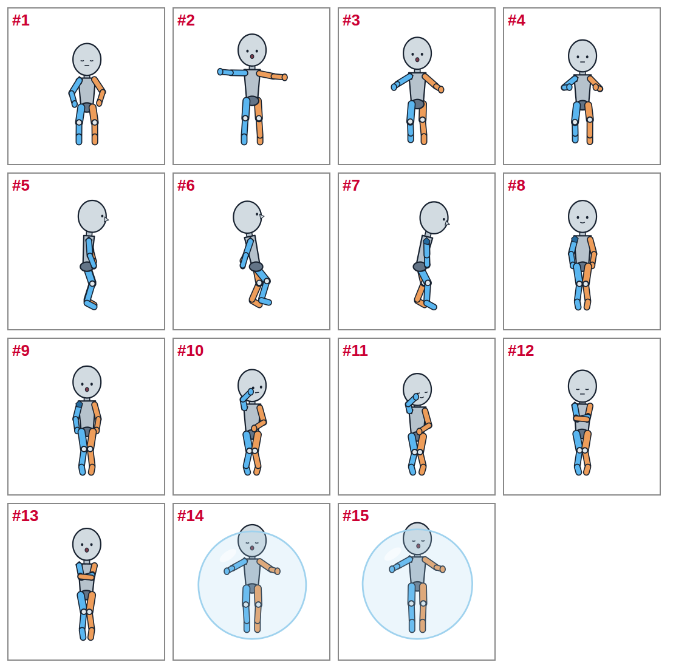
ポーズ一覧を保存

拘束を振りほどき、よろけてから構え直す／ふらっと一歩寄ってしまい、はっとする／見つめられて動けず、棒立ちのまま小さく頷く／胞子を吸い込み、口を覆って顔をそむけ、膝が内に折れる／自分の体を抱いて小刻みに震え、ときどき跳ねる／泡に包まれて床から浮き、体を丸めて口をぱくぱくさせる：15枚 添付のポーズ一覧の番号どおりに、1枚ずつ別の画像で描いてください。決まりは最初の文のとおりです。 #1 → aria__break_free__front__2.png 拘束を振りほどき、よろけてから構え直す／向き：正面（こちらを向く）／9コマのうち3コマ目（力む） 体勢：しゃがむ → 立つ／腕：大きく広げる → 構える／脚：一歩よろける／動き：力をためる → 振りほどく → よろける → 構え直す 押さえられている所：はじめだけ 言葉：thick dark violet rubbery tentacles, smooth rounded tentacles, wrapped around wrists, loosened restraint, tense startled expression, furrowed brows, clenched jaw, body suddenly tensed, resisting, alert eyes #2 → aria__break_free__front__3.png 拘束を振りほどき、よろけてから構え直す／向き：正面（こちらを向く）／9コマのうち4コマ目（振りほどく） 体勢：しゃがむ → 立つ／腕：大きく広げる → 構える／脚：一歩よろける／動き：力をためる → 振りほどく → よろける → 構え直す 押さえられている所：はじめだけ 言葉：thick dark violet rubbery tentacles, smooth rounded tentacles, wrapped around wrists, loosened restraint, tense startled expression, furrowed brows, clenched jaw, body suddenly tensed, resisting, alert eyes #3 → aria__break_free__front__6.png 拘束を振りほどき、よろけてから構え直す／向き：正面（こちらを向く）／9コマのうち7コマ目（よろける） 体勢：しゃがむ → 立つ／腕：大きく広げる → 構える／脚：一歩よろける／動き：力をためる → 振りほどく → よろける → 構え直す 押さえられている所：はじめだけ 言葉：thick dark violet rubbery tentacles, smooth rounded tentacles, wrapped around wrists, loosened restraint, tense startled expression, furrowed brows, clenched jaw, body suddenly tensed, resisting, alert eyes #4 → aria__break_free__front__8.png 拘束を振りほどき、よろけてから構え直す／向き：正面（こちらを向く）／9コマのうち9コマ目（構え直す） 体勢：しゃがむ → 立つ／腕：大きく広げる → 構える／脚：一歩よろける／動き：力をためる → 振りほどく → よろける → 構え直す 押さえられている所：はじめだけ 言葉：thick dark violet rubbery tentacles, smooth rounded tentacles, wrapped around wrists, loosened restraint, tense startled expression, furrowed brows, clenched jaw, body suddenly tensed, resisting, alert eyes #5 → aria__edge_pull__right__0.png ふらっと一歩寄ってしまい、はっとする／向き：真横（画面の右を向く横顔）／10コマのうち1コマ目（立つ） 体勢：立つ → 前屈み／腕：お腹を押さえる／脚：一歩前へ出てしまう／動き：一歩前へ寄ってしまう → はっとして前屈みになる 言葉：unfocused eyes, hesitant involuntary step, refocusing eyes, startled self-awareness, guarded expression, distant gaze, subdued expression, slightly parted lips, loose shoulders, absent-minded expression, faintly furrowed brows #6 → aria__edge_pull__right__3.png ふらっと一歩寄ってしまい、はっとする／向き：真横（画面の右を向く横顔）／10コマのうち4コマ目（腰が出る） 体勢：立つ → 前屈み／腕：お腹を押さえる／脚：一歩前へ出てしまう／動き：一歩前へ寄ってしまう → はっとして前屈みになる 言葉：unfocused eyes, hesitant involuntary step, refocusing eyes, startled self-awareness, guarded expression, distant gaze, subdued expression, slightly parted lips, loose shoulders, absent-minded expression, faintly furrowed brows #7 → aria__edge_pull__right__7.png ふらっと一歩寄ってしまい、はっとする／向き：真横（画面の右を向く横顔）／10コマのうち8コマ目（はっとする） 体勢：立つ → 前屈み／腕：お腹を押さえる／脚：一歩前へ出てしまう／動き：一歩前へ寄ってしまう → はっとして前屈みになる 言葉：unfocused eyes, hesitant involuntary step, refocusing eyes, startled self-awareness, guarded expression, distant gaze, subdued expression, slightly parted lips, loose shoulders, absent-minded expression, faintly furrowed brows #8 → aria__gaze_trance__front__0.png 見つめられて動けず、棒立ちのまま小さく頷く／向き：正面（こちらを向く）／8コマのうち1コマ目 体勢：棒立ち／腕：だらりと下げる／脚：立つ／動き：目の前の何かを見つめたまま、ゆっくり頷く。唇が動く 言葉：huge white eyeball, violet iris, wine-red membrane wings, hovering gaze, intense unbroken eye contact, faint violet glow, unfocused eyes, dazed expression, slightly parted lips, weakened posture, confused expression, furrowed brows #9 → aria__gaze_trance__front__1.png 見つめられて動けず、棒立ちのまま小さく頷く／向き：正面（こちらを向く）／8コマのうち2コマ目 体勢：棒立ち／腕：だらりと下げる／脚：立つ／動き：目の前の何かを見つめたまま、ゆっくり頷く。唇が動く 言葉：huge white eyeball, violet iris, wine-red membrane wings, hovering gaze, intense unbroken eye contact, faint violet glow, unfocused eyes, dazed expression, slightly parted lips, weakened posture, confused expression, furrowed brows #10 → aria__spore_inhale__front__0.png 胞子を吸い込み、口を覆って顔をそむけ、膝が内に折れる／向き：正面（こちらを向く）／8コマのうち1コマ目 体勢：立つ → 少し前屈み／腕：口を手で覆う／脚：膝が内に折れる／動き：顔をそむける → 吸い込んで咳き込む 言葉：mustard-yellow glowing spores, fine floating particles, amber glow, hazy spore cloud, drifting around face, coughing reaction, unfocused eyes, dazed expression, slightly parted lips, weakened posture, confused expression, furrowed brows #11 → aria__spore_inhale__front__2.png 胞子を吸い込み、口を覆って顔をそむけ、膝が内に折れる／向き：正面（こちらを向く）／8コマのうち3コマ目（吸う） 体勢：立つ → 少し前屈み／腕：口を手で覆う／脚：膝が内に折れる／動き：顔をそむける → 吸い込んで咳き込む 言葉：mustard-yellow glowing spores, fine floating particles, amber glow, hazy spore cloud, drifting around face, coughing reaction, unfocused eyes, dazed expression, slightly parted lips, weakened posture, confused expression, furrowed brows #12 → aria__shiver_hug__front__0.png 自分の体を抱いて小刻みに震え、ときどき跳ねる／向き：正面（こちらを向く）／8コマのうち1コマ目 体勢：立つ／腕：自分の体を抱く／脚：立つ／動き：肩をすくめて小刻みに震える。ときどき跳ねる 言葉：amber-brown shimmering scale dust, fine floating particles, faint cream shimmer, drifting powder surrounding body, trembling, unfocused eyes, dazed expression, slightly parted lips, weakened posture, confused expression, furrowed brows #13 → aria__shiver_hug__front__4.png 自分の体を抱いて小刻みに震え、ときどき跳ねる／向き：正面（こちらを向く）／8コマのうち5コマ目（跳ねる） 体勢：立つ／腕：自分の体を抱く／脚：立つ／動き：肩をすくめて小刻みに震える。ときどき跳ねる 言葉：amber-brown shimmering scale dust, fine floating particles, faint cream shimmer, drifting powder surrounding body, trembling, unfocused eyes, dazed expression, slightly parted lips, weakened posture, confused expression, furrowed brows #14 → aria__bubble_float__front__0.png 泡に包まれて床から浮き、体を丸めて口をぱくぱくさせる／向き：正面（こちらを向く）／8コマのうち1コマ目 体勢：泡の中で浮く。少し丸まる／腕：手のひらを泡の内側につく／脚：床から浮く／動き：口をぱくぱくさせる 押さえられている所：全身（泡の中） 言葉：large clear transparent bubble, pearly iridescent surface, clear bubbles, glossy curved surface, floating above floor, unfocused eyes, dazed expression, slightly parted lips, weakened posture, confused expression, furrowed brows #15 → aria__bubble_float__front__2.png 泡に包まれて床から浮き、体を丸めて口をぱくぱくさせる／向き：正面（こちらを向く）／8コマのうち3コマ目 体勢：泡の中で浮く。少し丸まる／腕：手のひらを泡の内側につく／脚：床から浮く／動き：口をぱくぱくさせる 押さえられている所：全身（泡の中） 言葉：large clear transparent bubble, pearly iridescent surface, clear bubbles, glossy curved surface, floating above floor, unfocused eyes, dazed expression, slightly parted lips, weakened posture, confused expression, furrowed brows
5. ぼーっと立ち尽くし、首をかしげてゆらゆら揺れる／思わず片手を伸ばして一歩寄り、手を胸に引っ込める／つまずいて手と膝をつき、起き上がる／力尽きて膝から崩れ、うつ伏せに倒れる 16枚

ポーズ一覧を保存
ぼーっと立ち尽くし、首をかしげてゆらゆら揺れる／思わず片手を伸ばして一歩寄り、手を胸に引っ込める／つまずいて手と膝をつき、起き上がる／力尽きて膝から崩れ、うつ伏せに倒れる：16枚 添付のポーズ一覧の番号どおりに、1枚ずつ別の画像で描いてください。決まりは最初の文のとおりです。 #1 → aria__daze_sway__front__0.png ぼーっと立ち尽くし、首をかしげてゆらゆら揺れる／向き：正面（こちらを向く）／8コマのうち1コマ目 体勢：立ち尽くす／腕：だらりと下げる／脚：立つ／動き：ぼーっとして、首を左右にかしげて揺れる 言葉：unfocused eyes, dazed expression, loose shoulders, absent-minded gaze, slow swaying, confused expression, slightly parted lips, weakened posture, furrowed brows #2 → aria__daze_sway__front__2.png ぼーっと立ち尽くし、首をかしげてゆらゆら揺れる／向き：正面（こちらを向く）／8コマのうち3コマ目 体勢：立ち尽くす／腕：だらりと下げる／脚：立つ／動き：ぼーっとして、首を左右にかしげて揺れる 言葉：unfocused eyes, dazed expression, loose shoulders, absent-minded gaze, slow swaying, confused expression, slightly parted lips, weakened posture, furrowed brows #3 → aria__reach_toward__right__0.png 思わず片手を伸ばして一歩寄り、手を胸に引っ込める／向き：真横（画面の右を向く横顔）／11コマのうち1コマ目（見る） 体勢：立つ／腕：片手を伸ばす → 胸に引っ込める／脚：一歩寄る／動き：何かに思わず手を伸ばす → はっとして目をそらす（真横から見た絵） 言葉：glowing turquoise mushroom cap, wet violet gills, soft turquoise glow, faint luminous haze, hesitant reaching gesture, unfocused eyes, dazed expression, slightly parted lips, weakened posture, confused expression, furrowed brows #4 → aria__reach_toward__right__4.png 思わず片手を伸ばして一歩寄り、手を胸に引っ込める／向き：真横（画面の右を向く横顔）／11コマのうち5コマ目（伸ばす） 体勢：立つ／腕：片手を伸ばす → 胸に引っ込める／脚：一歩寄る／動き：何かに思わず手を伸ばす → はっとして目をそらす（真横から見た絵） 言葉：glowing turquoise mushroom cap, wet violet gills, soft turquoise glow, faint luminous haze, hesitant reaching gesture, unfocused eyes, dazed expression, slightly parted lips, weakened posture, confused expression, furrowed brows #5 → aria__reach_toward__right__8.png 思わず片手を伸ばして一歩寄り、手を胸に引っ込める／向き：真横（画面の右を向く横顔）／11コマのうち9コマ目（引っ込める） 体勢：立つ／腕：片手を伸ばす → 胸に引っ込める／脚：一歩寄る／動き：何かに思わず手を伸ばす → はっとして目をそらす（真横から見た絵） 言葉：glowing turquoise mushroom cap, wet violet gills, soft turquoise glow, faint luminous haze, hesitant reaching gesture, unfocused eyes, dazed expression, slightly parted lips, weakened posture, confused expression, furrowed brows #6 → aria__trip_fall__right__0.png つまずいて手と膝をつき、起き上がる／向き：真横（画面の右を向く横顔）／23コマのうち1コマ目（歩く） 体勢：歩く → 四つん這い → 立つ／腕：前に出す → 手をつく／脚：つまずく → 膝をつく／動き：つまずいて転ぶ → 顔を上げる → 立ち上がる（真横から見た絵） 言葉：sudden stumble, startled expression, losing balance, bracing hands, weakened footing, recovering posture, exhausted expression, weakened posture, unsteady balance, heavy breathing, furrowed brows, strained face, losing strength #7 → aria__trip_fall__right__4.png つまずいて手と膝をつき、起き上がる／向き：真横（画面の右を向く横顔）／23コマのうち5コマ目（つまずく） 体勢：歩く → 四つん這い → 立つ／腕：前に出す → 手をつく／脚：つまずく → 膝をつく／動き：つまずいて転ぶ → 顔を上げる → 立ち上がる（真横から見た絵） 言葉：sudden stumble, startled expression, losing balance, bracing hands, weakened footing, recovering posture, exhausted expression, weakened posture, unsteady balance, heavy breathing, furrowed brows, strained face, losing strength #8 → aria__trip_fall__right__11.png つまずいて手と膝をつき、起き上がる／向き：真横（画面の右を向く横顔）／23コマのうち12コマ目（手をつく） 体勢：歩く → 四つん這い → 立つ／腕：前に出す → 手をつく／脚：つまずく → 膝をつく／動き：つまずいて転ぶ → 顔を上げる → 立ち上がる（真横から見た絵） 言葉：sudden stumble, startled expression, losing balance, bracing hands, weakened footing, recovering posture, exhausted expression, weakened posture, unsteady balance, heavy breathing, furrowed brows, strained face, losing strength #9 → aria__trip_fall__right__13.png つまずいて手と膝をつき、起き上がる／向き：真横（画面の右を向く横顔）／23コマのうち14コマ目（顔を上げる） 体勢：歩く → 四つん這い → 立つ／腕：前に出す → 手をつく／脚：つまずく → 膝をつく／動き：つまずいて転ぶ → 顔を上げる → 立ち上がる（真横から見た絵） 言葉：sudden stumble, startled expression, losing balance, bracing hands, weakened footing, recovering posture, exhausted expression, weakened posture, unsteady balance, heavy breathing, furrowed brows, strained face, losing strength #10 → aria__trip_fall__right__18.png つまずいて手と膝をつき、起き上がる／向き：真横（画面の右を向く横顔）／23コマのうち19コマ目（片膝） 体勢：歩く → 四つん這い → 立つ／腕：前に出す → 手をつく／脚：つまずく → 膝をつく／動き：つまずいて転ぶ → 顔を上げる → 立ち上がる（真横から見た絵） 言葉：sudden stumble, startled expression, losing balance, bracing hands, weakened footing, recovering posture, exhausted expression, weakened posture, unsteady balance, heavy breathing, furrowed brows, strained face, losing strength #11 → aria__trip_fall__right__20.png つまずいて手と膝をつき、起き上がる／向き：真横（画面の右を向く横顔）／23コマのうち21コマ目（立ち上がる） 体勢：歩く → 四つん這い → 立つ／腕：前に出す → 手をつく／脚：つまずく → 膝をつく／動き：つまずいて転ぶ → 顔を上げる → 立ち上がる（真横から見た絵） 言葉：sudden stumble, startled expression, losing balance, bracing hands, weakened footing, recovering posture, exhausted expression, weakened posture, unsteady balance, heavy breathing, furrowed brows, strained face, losing strength #12 → aria__defeat_collapse__right__0.png 力尽きて膝から崩れ、うつ伏せに倒れる／向き：真横（画面の右を向く横顔）／14コマのうち1コマ目（ふらつく） 体勢：立つ → 膝立ち → うつ伏せ／腕：だらりと下げる／脚：膝から崩れる／動き：力尽きて倒れ、動かなくなる（真横から見た絵） 言葉：fading strength, knees giving way, exhausted expression, slack shoulders, collapsing posture, unfocused eyes, weakened posture, unsteady balance, heavy breathing, furrowed brows, strained face, losing strength #13 → aria__defeat_collapse__right__2.png 力尽きて膝から崩れ、うつ伏せに倒れる／向き：真横（画面の右を向く横顔）／14コマのうち3コマ目（崩れる） 体勢：立つ → 膝立ち → うつ伏せ／腕：だらりと下げる／脚：膝から崩れる／動き：力尽きて倒れ、動かなくなる（真横から見た絵） 言葉：fading strength, knees giving way, exhausted expression, slack shoulders, collapsing posture, unfocused eyes, weakened posture, unsteady balance, heavy breathing, furrowed brows, strained face, losing strength #14 → aria__defeat_collapse__right__5.png 力尽きて膝から崩れ、うつ伏せに倒れる／向き：真横（画面の右を向く横顔）／14コマのうち6コマ目（膝をつく） 体勢：立つ → 膝立ち → うつ伏せ／腕：だらりと下げる／脚：膝から崩れる／動き：力尽きて倒れ、動かなくなる（真横から見た絵） 言葉：fading strength, knees giving way, exhausted expression, slack shoulders, collapsing posture, unfocused eyes, weakened posture, unsteady balance, heavy breathing, furrowed brows, strained face, losing strength #15 → aria__defeat_collapse__right__9.png 力尽きて膝から崩れ、うつ伏せに倒れる／向き：真横（画面の右を向く横顔）／14コマのうち10コマ目（倒れる） 体勢：立つ → 膝立ち → うつ伏せ／腕：だらりと下げる／脚：膝から崩れる／動き：力尽きて倒れ、動かなくなる（真横から見た絵） 言葉：fading strength, knees giving way, exhausted expression, slack shoulders, collapsing posture, unfocused eyes, weakened posture, unsteady balance, heavy breathing, furrowed brows, strained face, losing strength #16 → aria__defeat_collapse__right__13.png 力尽きて膝から崩れ、うつ伏せに倒れる／向き：真横（画面の右を向く横顔）／14コマのうち14コマ目（うつ伏せ） 体勢：立つ → 膝立ち → うつ伏せ／腕：だらりと下げる／脚：膝から崩れる／動き：力尽きて倒れ、動かなくなる（真横から見た絵） 言葉：fading strength, knees giving way, exhausted expression, slack shoulders, collapsing posture, unfocused eyes, weakened posture, unsteady balance, heavy breathing, furrowed brows, strained face, losing strength
6. 捕まった瞬間にびくっと跳ね、捕まった所を見下ろす 2枚

ポーズ一覧を保存
捕まった瞬間にびくっと跳ね、捕まった所を見下ろす：2枚 添付のポーズ一覧の番号どおりに、1枚ずつ別の画像で描いてください。決まりは最初の文のとおりです。 #1 → aria__grabbed_flinch__front__0.png 向き：正面（こちらを向く）／6コマのうち1コマ目（構え） 体勢：構えて立つ／腕：構える／脚：立つ／動き：捕まってびくっと跳ねる → 捕まった所を見下ろす 押さえられている所：どこか1か所 言葉：pale bluish-gray hand, short rounded nails, cool desaturated skin, firm sudden grip, startled reaction, looking toward grabbed area, tense startled expression, furrowed brows, clenched jaw, body suddenly tensed, resisting, alert eyes #2 → aria__grabbed_flinch__front__3.png 向き：正面（こちらを向く）／6コマのうち4コマ目（見下ろす） 体勢：構えて立つ／腕：構える／脚：立つ／動き：捕まってびくっと跳ねる → 捕まった所を見下ろす 押さえられている所：どこか1か所 言葉：pale bluish-gray hand, short rounded nails, cool desaturated skin, firm sudden grip, startled reaction, looking toward grabbed area, tense startled expression, furrowed brows, clenched jaw, body suddenly tensed, resisting, alert eyes
ヒーラー 70枚・6回
最初に1回だけ送る文（見た目の画像を添付）
添付する画像：healer-source-v8.png

これから、2Dゲームのキャラクターのアニメーション用の絵を、何枚かずつまとめてお願いします。 ・添付の画像のキャラクター「ヒーラー」を、同じ絵柄・同じ頭身（小さめのデフォルメ）・同じ衣装と色で描いてください。 ・持ち物と特徴：右手に金の十字の杖（輪の中に青い宝珠）。エルフの長い耳。長い黒髪（頭に編み込み）で、いつも目を閉じている。白と金の衣装で、胸の前に細い前垂れが2枚下がり、腰から下は長い前垂れと裾。白い長手袋・白い長靴下・白いブーツ。 ・毎回、番号つきの「ポーズ一覧」の画像を添付し、番号ごとに向きと動きを書きます。番号1つにつき1枚の別々の画像を描いてください（1枚に並べない）。 ・姿勢・向き・手足と持ち物の位置は、ポーズ一覧の図（マネキン）に合わせてください。図の色の意味：青＝キャラクター本人の右半身、橙＝左半身、灰色＝胴と頭。図の線・色・関節の丸・番号は描かないでください。 ・1枚ごとに正方形（1024×1024）。全身が入るように上下左右に1割くらいの余白をとり、立っているときの足元は、どの絵も画像の下から1割くらいの高さにそろえてください。キャラクターの大きさも、どの絵でもそろえてください。 ・背景は透明（できなければ真っ白の無地）。影・床・効果線・文字・枠は描かないでください。 ・ファイル名は、番号ごとに指定する名前にしてください。できれば全部を1つのZIPにまとめてください。 ・描いた絵を縮小・減色・切り抜きしないでください（描いたままの PNG）。 ・今回は、何かに押さえられたり、床に倒れたりする場面の絵です。図の色の付いた線・輪・塊・泡などは、押さえているものの位置です。番号ごとに書く「押さえているものの見た目」で、その位置に一緒に描いてください（図と同じ色では描かない）。 ・「言葉」の欄は、見た目や顔・様子の言葉（英語）です。絵に反映してください。 ・描けない、または描かない方がよいと判断した番号は、飛ばしてかまいません。飛ばした番号と理由を、最後にまとめて教えてください。 わかったら「OK」とだけ返してください。
まとめて送る文（そのポーズ一覧を添付）
1. 杖を掲げてから仲間へ向け、加護を与える／杖で床を突き、清めの光を広げる 6枚
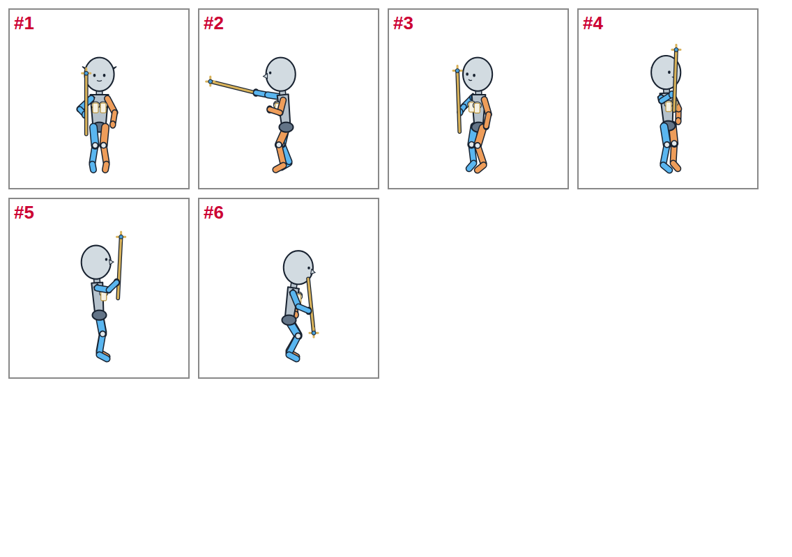
ポーズ一覧を保存

描き直し：杖を掲げてから仲間へ向け、加護を与える／杖で床を突き、清めの光を広げる：6枚 添付のポーズ一覧の番号どおりに、1枚ずつ別の画像で描いてください。決まりは最初の文のとおりです。 ★の付いた番号は描き直しです。キャラクターの大きさは、ほかのコマと同じにしてください（剣や杖が長くても体を縮めない。持ち物の先が画像の端に近くてもよいが、切れないように）。前回、安全判定で止まったものは、衣装はそのままに、向きや腕・持ち物・影で肌の出る所が自然に目立たない描き方にしてください。 #1 → healer__healer_buff__front__0.png 杖を掲げてから仲間へ向け、加護を与える／向き：正面（こちらを向く）／12コマのうち1コマ目（立つ） ★前回は画像生成の安全判定で止まった #2 → healer__healer_buff__left__8.png 杖を掲げてから仲間へ向け、加護を与える／向き：真横（画面の左を向く横顔）／12コマのうち9コマ目（授ける） ★前回は画像生成の安全判定で止まった the staff pointed at the one she blesses #3 → healer__healer_buff__down_left__0.png 杖を掲げてから仲間へ向け、加護を与える／向き：斜め前（体の正面が画面の左手前を向く）／12コマのうち1コマ目（立つ） ★前回は画像生成の安全判定で止まった #4 → healer__healer_purify__down_right__3.png 杖で床を突き、清めの光を広げる／向き：斜め前（体の正面が画面の右手前を向く）／13コマのうち4コマ目（持ち上げる） ★前回は画像生成の安全判定で止まった lifts the staff a little #5 → healer__healer_purify__right__3.png 杖で床を突き、清めの光を広げる／向き：真横（画面の右を向く横顔）／13コマのうち4コマ目（持ち上げる） ★前回は画像生成の安全判定で止まった lifts the staff a little #6 → healer__healer_purify__right__6.png 杖で床を突き、清めの光を広げる／向き：真横（画面の右を向く横顔）／13コマのうち7コマ目（突く） ★前回は画像生成の安全判定で止まった drives its foot to the floor: the light spreads
2. 押されて尻もちをつき、仰向けに倒れる／仰向けから起き上がる／後ろから腕ごと胴を抱きすくめられ、もがく／柔らかい塊に足元から腰まで沈んでいく 16枚
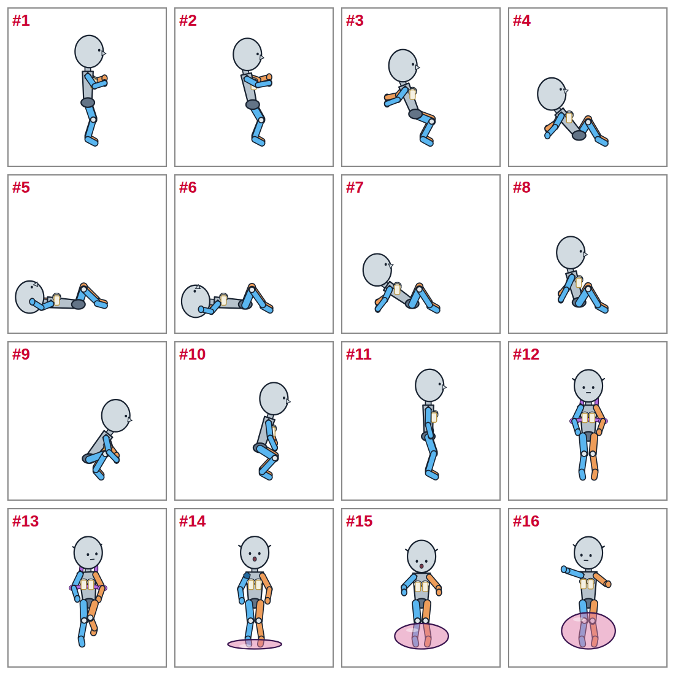
ポーズ一覧を保存

押されて尻もちをつき、仰向けに倒れる／仰向けから起き上がる／後ろから腕ごと胴を抱きすくめられ、もがく／柔らかい塊に足元から腰まで沈んでいく：16枚 添付のポーズ一覧の番号どおりに、1枚ずつ別の画像で描いてください。決まりは最初の文のとおりです。 #1 → healer__down_fall_back__right__0.png 押されて尻もちをつき、仰向けに倒れる／向き：真横（画面の右を向く横顔）／19コマのうち1コマ目（立つ） 体勢：立つ → 仰向け／腕：前に出す → 後ろにつく／脚：よろける／動き：押されてよろける → 尻もち → 仰向けに倒れる 言葉：translucent bright aqua water body, white foam rim, thick flowing water tendrils, forceful push from front, startled bracing reaction #2 → healer__down_fall_back__right__2.png 押されて尻もちをつき、仰向けに倒れる／向き：真横（画面の右を向く横顔）／19コマのうち3コマ目（押される） 体勢：立つ → 仰向け／腕：前に出す → 後ろにつく／脚：よろける／動き：押されてよろける → 尻もち → 仰向けに倒れる 言葉：translucent bright aqua water body, white foam rim, thick flowing water tendrils, forceful push from front, startled bracing reaction #3 → healer__down_fall_back__right__8.png 押されて尻もちをつき、仰向けに倒れる／向き：真横（画面の右を向く横顔）／19コマのうち9コマ目（よろける） 体勢：立つ → 仰向け／腕：前に出す → 後ろにつく／脚：よろける／動き：押されてよろける → 尻もち → 仰向けに倒れる 言葉：translucent bright aqua water body, white foam rim, thick flowing water tendrils, forceful push from front, startled bracing reaction #4 → healer__down_fall_back__right__12.png 押されて尻もちをつき、仰向けに倒れる／向き：真横（画面の右を向く横顔）／19コマのうち13コマ目（尻もち） 体勢：立つ → 仰向け／腕：前に出す → 後ろにつく／脚：よろける／動き：押されてよろける → 尻もち → 仰向けに倒れる 言葉：translucent bright aqua water body, white foam rim, thick flowing water tendrils, forceful push from front, startled bracing reaction #5 → healer__down_fall_back__right__17.png 押されて尻もちをつき、仰向けに倒れる／向き：真横（画面の右を向く横顔）／19コマのうち18コマ目（倒れる） 体勢：立つ → 仰向け／腕：前に出す → 後ろにつく／脚：よろける／動き：押されてよろける → 尻もち → 仰向けに倒れる 言葉：translucent bright aqua water body, white foam rim, thick flowing water tendrils, forceful push from front, startled bracing reaction #6 → healer__get_up__right__0.png 仰向けから起き上がる／向き：真横（画面の右を向く横顔）／19コマのうち1コマ目（仰向け） 体勢：仰向け → 立つ／腕：肘をつく → 手をつく／脚：膝を立てる → しゃがむ → 立つ／動き：起き上がって立つ（真横から見た絵） 言葉：refocusing eyes, pushing body upward, recovering balance, determined expression, steadying breath, alert expression returning, furrowed brows, regaining composure #7 → healer__get_up__right__4.png 仰向けから起き上がる／向き：真横（画面の右を向く横顔）／19コマのうち5コマ目（肘をつく） 体勢：仰向け → 立つ／腕：肘をつく → 手をつく／脚：膝を立てる → しゃがむ → 立つ／動き：起き上がって立つ（真横から見た絵） 言葉：refocusing eyes, pushing body upward, recovering balance, determined expression, steadying breath, alert expression returning, furrowed brows, regaining composure #8 → healer__get_up__right__8.png 仰向けから起き上がる／向き：真横（画面の右を向く横顔）／19コマのうち9コマ目（座る） 体勢：仰向け → 立つ／腕：肘をつく → 手をつく／脚：膝を立てる → しゃがむ → 立つ／動き：起き上がって立つ（真横から見た絵） 言葉：refocusing eyes, pushing body upward, recovering balance, determined expression, steadying breath, alert expression returning, furrowed brows, regaining composure #9 → healer__get_up__right__13.png 仰向けから起き上がる／向き：真横（画面の右を向く横顔）／19コマのうち14コマ目（しゃがむ） 体勢：仰向け → 立つ／腕：肘をつく → 手をつく／脚：膝を立てる → しゃがむ → 立つ／動き：起き上がって立つ（真横から見た絵） 言葉：refocusing eyes, pushing body upward, recovering balance, determined expression, steadying breath, alert expression returning, furrowed brows, regaining composure #10 → healer__get_up__right__16.png 仰向けから起き上がる／向き：真横（画面の右を向く横顔）／19コマのうち17コマ目（立ち上がる） 体勢：仰向け → 立つ／腕：肘をつく → 手をつく／脚：膝を立てる → しゃがむ → 立つ／動き：起き上がって立つ（真横から見た絵） 言葉：refocusing eyes, pushing body upward, recovering balance, determined expression, steadying breath, alert expression returning, furrowed brows, regaining composure #11 → healer__get_up__right__18.png 仰向けから起き上がる／向き：真横（画面の右を向く横顔）／19コマのうち19コマ目（立つ） 体勢：仰向け → 立つ／腕：肘をつく → 手をつく／脚：膝を立てる → しゃがむ → 立つ／動き：起き上がって立つ（真横から見た絵） 言葉：refocusing eyes, pushing body upward, recovering balance, determined expression, steadying breath, alert expression returning, furrowed brows, regaining composure #12 → healer__held_from_behind__front__0.png 後ろから腕ごと胴を抱きすくめられ、もがく／向き：正面（こちらを向く）／8コマのうち1コマ目 体勢：立つ／腕：体の横に押さえつけられる／脚：足を交互に蹴る／動き：身をよじる。足を蹴る。振り返る 押さえられている所：両肩・両肘（後ろから抱えられる） 押さえているものの見た目：large gray stone golem arms, rough stone surface, thick heavy forearms 言葉：large gray stone golem arms, rough stone surface, thick heavy forearms, arms and torso firmly held from behind, struggling #13 → healer__held_from_behind__front__2.png 後ろから腕ごと胴を抱きすくめられ、もがく／向き：正面（こちらを向く）／8コマのうち3コマ目 体勢：立つ／腕：体の横に押さえつけられる／脚：足を交互に蹴る／動き：身をよじる。足を蹴る。振り返る 押さえられている所：両肩・両肘（後ろから抱えられる） 押さえているものの見た目：large gray stone golem arms, rough stone surface, thick heavy forearms 言葉：large gray stone golem arms, rough stone surface, thick heavy forearms, arms and torso firmly held from behind, struggling #14 → healer__engulf_sink__front__0.png 柔らかい塊に足元から腰まで沈んでいく／向き：正面（こちらを向く）／10コマのうち1コマ目（足元） 体勢：立つ／腕：広げて釣り合いを取る／脚：足元 → 膝 → 太ももまで沈む／動き：下を見る。片脚を抜こうとするが抜けない 押さえられている所：足元から太もも（床の塊の中） 押さえているものの見た目：chrome-silver mirror slime, pale cyan reflections, smooth glossy surface, thick rounded slime mass 言葉：chrome-silver mirror slime, pale cyan reflections, smooth glossy surface, thick rounded slime mass, legs surrounded by soft slime #15 → healer__engulf_sink__front__3.png 柔らかい塊に足元から腰まで沈んでいく／向き：正面（こちらを向く）／10コマのうち4コマ目（膝まで） 体勢：立つ／腕：広げて釣り合いを取る／脚：足元 → 膝 → 太ももまで沈む／動き：下を見る。片脚を抜こうとするが抜けない 押さえられている所：足元から太もも（床の塊の中） 押さえているものの見た目：chrome-silver mirror slime, pale cyan reflections, smooth glossy surface, thick rounded slime mass 言葉：chrome-silver mirror slime, pale cyan reflections, smooth glossy surface, thick rounded slime mass, legs surrounded by soft slime #16 → healer__engulf_sink__front__6.png 柔らかい塊に足元から腰まで沈んでいく／向き：正面（こちらを向く）／10コマのうち7コマ目（もがく） 体勢：立つ／腕：広げて釣り合いを取る／脚：足元 → 膝 → 太ももまで沈む／動き：下を見る。片脚を抜こうとするが抜けない 押さえられている所：足元から太もも（床の塊の中） 押さえているものの見た目：chrome-silver mirror slime, pale cyan reflections, smooth glossy surface, thick rounded slime mass 言葉：chrome-silver mirror slime, pale cyan reflections, smooth glossy surface, thick rounded slime mass, legs surrounded by soft slime
3. 我に返って口元をぬぐい、一歩下がる／座り込んだ所から立ち上がる／腰まで沈んだまま、上体をひねって抜け出そうとする／足首をつかまれて後ろへ引かれ、よろけて四つん這いになる 15枚
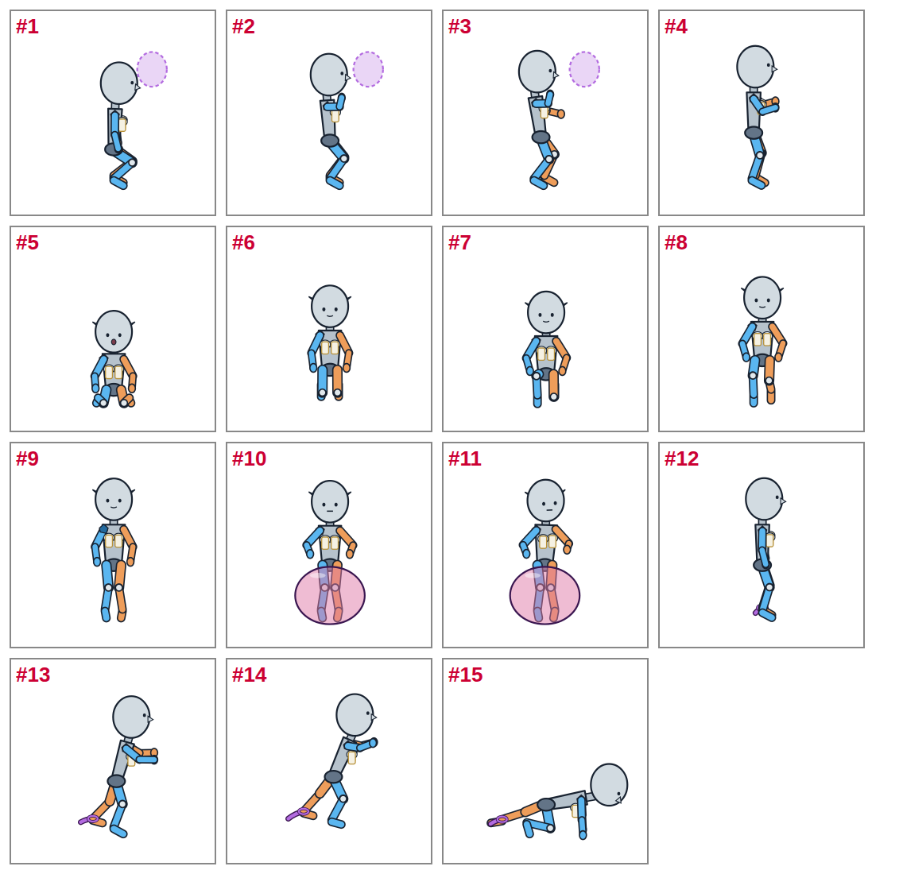
ポーズ一覧を保存

我に返って口元をぬぐい、一歩下がる／座り込んだ所から立ち上がる／腰まで沈んだまま、上体をひねって抜け出そうとする／足首をつかまれて後ろへ引かれ、よろけて四つん這いになる：15枚 添付のポーズ一覧の番号どおりに、1枚ずつ別の画像で描いてください。決まりは最初の文のとおりです。 #1 → healer__kiss_recover__right__0.png 我に返って口元をぬぐい、一歩下がる／向き：真横（画面の右を向く横顔）／11コマのうち1コマ目（ふらつく） 体勢：立つ／腕：手の甲で口をぬぐう。片手を前に出す／脚：一歩下がる／動き：我に返る → 口をぬぐう → 下がって構える 言葉：refocusing eyes, wiping mouth, alert expression, cautious backward step, defensive readiness, alert expression returning, furrowed brows, steadying breath, regaining composure, determined expression #2 → healer__kiss_recover__right__5.png 我に返って口元をぬぐい、一歩下がる／向き：真横（画面の右を向く横顔）／11コマのうち6コマ目（ぬぐう） 体勢：立つ／腕：手の甲で口をぬぐう。片手を前に出す／脚：一歩下がる／動き：我に返る → 口をぬぐう → 下がって構える 言葉：refocusing eyes, wiping mouth, alert expression, cautious backward step, defensive readiness, alert expression returning, furrowed brows, steadying breath, regaining composure, determined expression #3 → healer__kiss_recover__right__8.png 我に返って口元をぬぐい、一歩下がる／向き：真横（画面の右を向く横顔）／11コマのうち9コマ目（下がる） 体勢：立つ／腕：手の甲で口をぬぐう。片手を前に出す／脚：一歩下がる／動き：我に返る → 口をぬぐう → 下がって構える 言葉：refocusing eyes, wiping mouth, alert expression, cautious backward step, defensive readiness, alert expression returning, furrowed brows, steadying breath, regaining composure, determined expression #4 → healer__kiss_recover__right__10.png 我に返って口元をぬぐい、一歩下がる／向き：真横（画面の右を向く横顔）／11コマのうち11コマ目（構え） 体勢：立つ／腕：手の甲で口をぬぐう。片手を前に出す／脚：一歩下がる／動き：我に返る → 口をぬぐう → 下がって構える 言葉：refocusing eyes, wiping mouth, alert expression, cautious backward step, defensive readiness, alert expression returning, furrowed brows, steadying breath, regaining composure, determined expression #5 → healer__sit_recover__front__2.png 座り込んだ所から立ち上がる／向き：正面（こちらを向く）／14コマのうち3コマ目（手をつく） 体勢：女の子座り → 立つ／腕：前に手をつく／脚：膝立ち → 片膝 → 立つ／動き：立ち上がる 言葉：recovering strength, determined expression, pushing upward, unsteady balance, refocusing eyes, alert expression returning, furrowed brows, steadying breath, regaining composure #6 → healer__sit_recover__front__5.png 座り込んだ所から立ち上がる／向き：正面（こちらを向く）／14コマのうち6コマ目（膝立ち） 体勢：女の子座り → 立つ／腕：前に手をつく／脚：膝立ち → 片膝 → 立つ／動き：立ち上がる 言葉：recovering strength, determined expression, pushing upward, unsteady balance, refocusing eyes, alert expression returning, furrowed brows, steadying breath, regaining composure #7 → healer__sit_recover__front__9.png 座り込んだ所から立ち上がる／向き：正面（こちらを向く）／14コマのうち10コマ目（片膝） 体勢：女の子座り → 立つ／腕：前に手をつく／脚：膝立ち → 片膝 → 立つ／動き：立ち上がる 言葉：recovering strength, determined expression, pushing upward, unsteady balance, refocusing eyes, alert expression returning, furrowed brows, steadying breath, regaining composure #8 → healer__sit_recover__front__11.png 座り込んだ所から立ち上がる／向き：正面（こちらを向く）／14コマのうち12コマ目（立ち上がる） 体勢：女の子座り → 立つ／腕：前に手をつく／脚：膝立ち → 片膝 → 立つ／動き：立ち上がる 言葉：recovering strength, determined expression, pushing upward, unsteady balance, refocusing eyes, alert expression returning, furrowed brows, steadying breath, regaining composure #9 → healer__sit_recover__front__13.png 座り込んだ所から立ち上がる／向き：正面（こちらを向く）／14コマのうち14コマ目（立つ） 体勢：女の子座り → 立つ／腕：前に手をつく／脚：膝立ち → 片膝 → 立つ／動き：立ち上がる 言葉：recovering strength, determined expression, pushing upward, unsteady balance, refocusing eyes, alert expression returning, furrowed brows, steadying breath, regaining composure #10 → healer__engulf_struggle__front__0.png 腰まで沈んだまま、上体をひねって抜け出そうとする／向き：正面（こちらを向く）／8コマのうち1コマ目 体勢：腰まで埋まる／腕：片手ずつ塊を押す／脚：動かない／動き：上体をひねって抜け出そうとする 押さえられている所：腰から下（塊の中） 押さえているものの見た目：chrome-silver mirror slime, pale cyan reflections, smooth glossy surface, thick rounded slime mass 言葉：chrome-silver mirror slime, pale cyan reflections, smooth glossy surface, thick rounded slime mass, lower body trapped inside, twisting to escape #11 → healer__engulf_struggle__front__6.png 腰まで沈んだまま、上体をひねって抜け出そうとする／向き：正面（こちらを向く）／8コマのうち7コマ目 体勢：腰まで埋まる／腕：片手ずつ塊を押す／脚：動かない／動き：上体をひねって抜け出そうとする 押さえられている所：腰から下（塊の中） 押さえているものの見た目：chrome-silver mirror slime, pale cyan reflections, smooth glossy surface, thick rounded slime mass 言葉：chrome-silver mirror slime, pale cyan reflections, smooth glossy surface, thick rounded slime mass, lower body trapped inside, twisting to escape #12 → healer__ankle_grabbed__right__0.png 足首をつかまれて後ろへ引かれ、よろけて四つん這いになる／向き：真横（画面の右を向く横顔）／17コマのうち1コマ目（つかまれる） 体勢：立つ → 四つん這い／腕：振り回す → 両手をつく／脚：片足跳び → 片膝をつく／動き：足首をつかまれ後ろへ引かれる → 前のめり → 倒れる（真横から見た絵） 押さえられている所：左の足首（後ろから） 言葉：pale bluish-gray hand, short rounded nails, cool desaturated skin, firm grip around ankle, pulling backward, tense startled expression, furrowed brows, clenched jaw, body suddenly tensed, resisting, alert eyes #13 → healer__ankle_grabbed__right__4.png 足首をつかまれて後ろへ引かれ、よろけて四つん這いになる／向き：真横（画面の右を向く横顔）／17コマのうち5コマ目（引かれる） 体勢：立つ → 四つん這い／腕：振り回す → 両手をつく／脚：片足跳び → 片膝をつく／動き：足首をつかまれ後ろへ引かれる → 前のめり → 倒れる（真横から見た絵） 押さえられている所：左の足首（後ろから） 言葉：pale bluish-gray hand, short rounded nails, cool desaturated skin, firm grip around ankle, pulling backward, tense startled expression, furrowed brows, clenched jaw, body suddenly tensed, resisting, alert eyes #14 → healer__ankle_grabbed__right__6.png 足首をつかまれて後ろへ引かれ、よろけて四つん這いになる／向き：真横（画面の右を向く横顔）／17コマのうち7コマ目（片足跳び） 体勢：立つ → 四つん這い／腕：振り回す → 両手をつく／脚：片足跳び → 片膝をつく／動き：足首をつかまれ後ろへ引かれる → 前のめり → 倒れる（真横から見た絵） 押さえられている所：左の足首（後ろから） 言葉：pale bluish-gray hand, short rounded nails, cool desaturated skin, firm grip around ankle, pulling backward, tense startled expression, furrowed brows, clenched jaw, body suddenly tensed, resisting, alert eyes #15 → healer__ankle_grabbed__right__14.png 足首をつかまれて後ろへ引かれ、よろけて四つん這いになる／向き：真横（画面の右を向く横顔）／17コマのうち15コマ目（倒れる） 体勢：立つ → 四つん這い／腕：振り回す → 両手をつく／脚：片足跳び → 片膝をつく／動き：足首をつかまれ後ろへ引かれる → 前のめり → 倒れる（真横から見た絵） 押さえられている所：左の足首（後ろから） 言葉：pale bluish-gray hand, short rounded nails, cool desaturated skin, firm grip around ankle, pulling backward, tense startled expression, furrowed brows, clenched jaw, body suddenly tensed, resisting, alert eyes
4. 拘束を振りほどき、よろけてから構え直す／ふらっと一歩寄ってしまい、はっとする／見つめられて動けず、棒立ちのまま小さく頷く／胞子を吸い込み、口を覆って顔をそむけ、膝が内に折れる／自分の体を抱いて小刻みに震え、ときどき跳ねる／泡に包まれて床から浮き、体を丸めて口をぱくぱくさせる 15枚
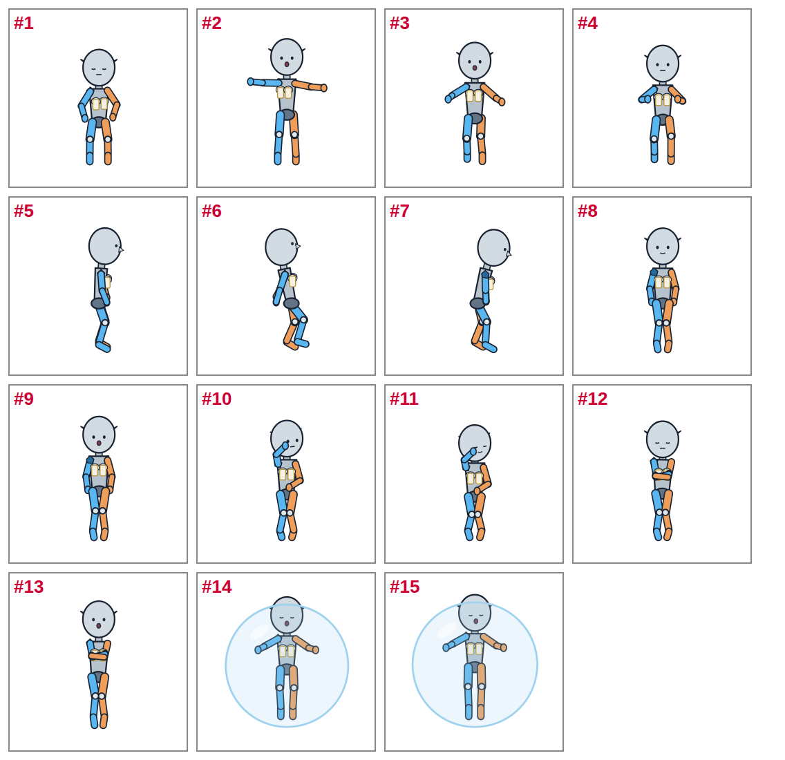
ポーズ一覧を保存

拘束を振りほどき、よろけてから構え直す／ふらっと一歩寄ってしまい、はっとする／見つめられて動けず、棒立ちのまま小さく頷く／胞子を吸い込み、口を覆って顔をそむけ、膝が内に折れる／自分の体を抱いて小刻みに震え、ときどき跳ねる／泡に包まれて床から浮き、体を丸めて口をぱくぱくさせる：15枚 添付のポーズ一覧の番号どおりに、1枚ずつ別の画像で描いてください。決まりは最初の文のとおりです。 #1 → healer__break_free__front__2.png 拘束を振りほどき、よろけてから構え直す／向き：正面（こちらを向く）／9コマのうち3コマ目（力む） 体勢：しゃがむ → 立つ／腕：大きく広げる → 構える／脚：一歩よろける／動き：力をためる → 振りほどく → よろける → 構え直す 押さえられている所：はじめだけ 言葉：thick dark violet rubbery tentacles, smooth rounded tentacles, wrapped around wrists, loosened restraint, tense startled expression, furrowed brows, clenched jaw, body suddenly tensed, resisting, alert eyes #2 → healer__break_free__front__3.png 拘束を振りほどき、よろけてから構え直す／向き：正面（こちらを向く）／9コマのうち4コマ目（振りほどく） 体勢：しゃがむ → 立つ／腕：大きく広げる → 構える／脚：一歩よろける／動き：力をためる → 振りほどく → よろける → 構え直す 押さえられている所：はじめだけ 言葉：thick dark violet rubbery tentacles, smooth rounded tentacles, wrapped around wrists, loosened restraint, tense startled expression, furrowed brows, clenched jaw, body suddenly tensed, resisting, alert eyes #3 → healer__break_free__front__6.png 拘束を振りほどき、よろけてから構え直す／向き：正面（こちらを向く）／9コマのうち7コマ目（よろける） 体勢：しゃがむ → 立つ／腕：大きく広げる → 構える／脚：一歩よろける／動き：力をためる → 振りほどく → よろける → 構え直す 押さえられている所：はじめだけ 言葉：thick dark violet rubbery tentacles, smooth rounded tentacles, wrapped around wrists, loosened restraint, tense startled expression, furrowed brows, clenched jaw, body suddenly tensed, resisting, alert eyes #4 → healer__break_free__front__8.png 拘束を振りほどき、よろけてから構え直す／向き：正面（こちらを向く）／9コマのうち9コマ目（構え直す） 体勢：しゃがむ → 立つ／腕：大きく広げる → 構える／脚：一歩よろける／動き：力をためる → 振りほどく → よろける → 構え直す 押さえられている所：はじめだけ 言葉：thick dark violet rubbery tentacles, smooth rounded tentacles, wrapped around wrists, loosened restraint, tense startled expression, furrowed brows, clenched jaw, body suddenly tensed, resisting, alert eyes #5 → healer__edge_pull__right__0.png ふらっと一歩寄ってしまい、はっとする／向き：真横（画面の右を向く横顔）／10コマのうち1コマ目（立つ） 体勢：立つ → 前屈み／腕：お腹を押さえる／脚：一歩前へ出てしまう／動き：一歩前へ寄ってしまう → はっとして前屈みになる 言葉：unfocused eyes, hesitant involuntary step, refocusing eyes, startled self-awareness, guarded expression, distant gaze, subdued expression, slightly parted lips, loose shoulders, absent-minded expression, faintly furrowed brows #6 → healer__edge_pull__right__3.png ふらっと一歩寄ってしまい、はっとする／向き：真横（画面の右を向く横顔）／10コマのうち4コマ目（腰が出る） 体勢：立つ → 前屈み／腕：お腹を押さえる／脚：一歩前へ出てしまう／動き：一歩前へ寄ってしまう → はっとして前屈みになる 言葉：unfocused eyes, hesitant involuntary step, refocusing eyes, startled self-awareness, guarded expression, distant gaze, subdued expression, slightly parted lips, loose shoulders, absent-minded expression, faintly furrowed brows #7 → healer__edge_pull__right__7.png ふらっと一歩寄ってしまい、はっとする／向き：真横（画面の右を向く横顔）／10コマのうち8コマ目（はっとする） 体勢：立つ → 前屈み／腕：お腹を押さえる／脚：一歩前へ出てしまう／動き：一歩前へ寄ってしまう → はっとして前屈みになる 言葉：unfocused eyes, hesitant involuntary step, refocusing eyes, startled self-awareness, guarded expression, distant gaze, subdued expression, slightly parted lips, loose shoulders, absent-minded expression, faintly furrowed brows #8 → healer__gaze_trance__front__0.png 見つめられて動けず、棒立ちのまま小さく頷く／向き：正面（こちらを向く）／8コマのうち1コマ目 体勢：棒立ち／腕：だらりと下げる／脚：立つ／動き：目の前の何かを見つめたまま、ゆっくり頷く。唇が動く 言葉：huge white eyeball, violet iris, wine-red membrane wings, hovering gaze, intense unbroken eye contact, faint violet glow, unfocused eyes, dazed expression, slightly parted lips, weakened posture, confused expression, furrowed brows #9 → healer__gaze_trance__front__1.png 見つめられて動けず、棒立ちのまま小さく頷く／向き：正面（こちらを向く）／8コマのうち2コマ目 体勢：棒立ち／腕：だらりと下げる／脚：立つ／動き：目の前の何かを見つめたまま、ゆっくり頷く。唇が動く 言葉：huge white eyeball, violet iris, wine-red membrane wings, hovering gaze, intense unbroken eye contact, faint violet glow, unfocused eyes, dazed expression, slightly parted lips, weakened posture, confused expression, furrowed brows #10 → healer__spore_inhale__front__0.png 胞子を吸い込み、口を覆って顔をそむけ、膝が内に折れる／向き：正面（こちらを向く）／8コマのうち1コマ目 体勢：立つ → 少し前屈み／腕：口を手で覆う／脚：膝が内に折れる／動き：顔をそむける → 吸い込んで咳き込む 言葉：mustard-yellow glowing spores, fine floating particles, amber glow, hazy spore cloud, drifting around face, coughing reaction, unfocused eyes, dazed expression, slightly parted lips, weakened posture, confused expression, furrowed brows #11 → healer__spore_inhale__front__2.png 胞子を吸い込み、口を覆って顔をそむけ、膝が内に折れる／向き：正面（こちらを向く）／8コマのうち3コマ目（吸う） 体勢：立つ → 少し前屈み／腕：口を手で覆う／脚：膝が内に折れる／動き：顔をそむける → 吸い込んで咳き込む 言葉：mustard-yellow glowing spores, fine floating particles, amber glow, hazy spore cloud, drifting around face, coughing reaction, unfocused eyes, dazed expression, slightly parted lips, weakened posture, confused expression, furrowed brows #12 → healer__shiver_hug__front__0.png 自分の体を抱いて小刻みに震え、ときどき跳ねる／向き：正面（こちらを向く）／8コマのうち1コマ目 体勢：立つ／腕：自分の体を抱く／脚：立つ／動き：肩をすくめて小刻みに震える。ときどき跳ねる 言葉：amber-brown shimmering scale dust, fine floating particles, faint cream shimmer, drifting powder surrounding body, trembling, unfocused eyes, dazed expression, slightly parted lips, weakened posture, confused expression, furrowed brows #13 → healer__shiver_hug__front__4.png 自分の体を抱いて小刻みに震え、ときどき跳ねる／向き：正面（こちらを向く）／8コマのうち5コマ目（跳ねる） 体勢：立つ／腕：自分の体を抱く／脚：立つ／動き：肩をすくめて小刻みに震える。ときどき跳ねる 言葉：amber-brown shimmering scale dust, fine floating particles, faint cream shimmer, drifting powder surrounding body, trembling, unfocused eyes, dazed expression, slightly parted lips, weakened posture, confused expression, furrowed brows #14 → healer__bubble_float__front__0.png 泡に包まれて床から浮き、体を丸めて口をぱくぱくさせる／向き：正面（こちらを向く）／8コマのうち1コマ目 体勢：泡の中で浮く。少し丸まる／腕：手のひらを泡の内側につく／脚：床から浮く／動き：口をぱくぱくさせる 押さえられている所：全身（泡の中） 言葉：large clear transparent bubble, pearly iridescent surface, clear bubbles, glossy curved surface, floating above floor, unfocused eyes, dazed expression, slightly parted lips, weakened posture, confused expression, furrowed brows #15 → healer__bubble_float__front__2.png 泡に包まれて床から浮き、体を丸めて口をぱくぱくさせる／向き：正面（こちらを向く）／8コマのうち3コマ目 体勢：泡の中で浮く。少し丸まる／腕：手のひらを泡の内側につく／脚：床から浮く／動き：口をぱくぱくさせる 押さえられている所：全身（泡の中） 言葉：large clear transparent bubble, pearly iridescent surface, clear bubbles, glossy curved surface, floating above floor, unfocused eyes, dazed expression, slightly parted lips, weakened posture, confused expression, furrowed brows
5. ぼーっと立ち尽くし、首をかしげてゆらゆら揺れる／思わず片手を伸ばして一歩寄り、手を胸に引っ込める／つまずいて手と膝をつき、起き上がる／力尽きて膝から崩れ、うつ伏せに倒れる 16枚
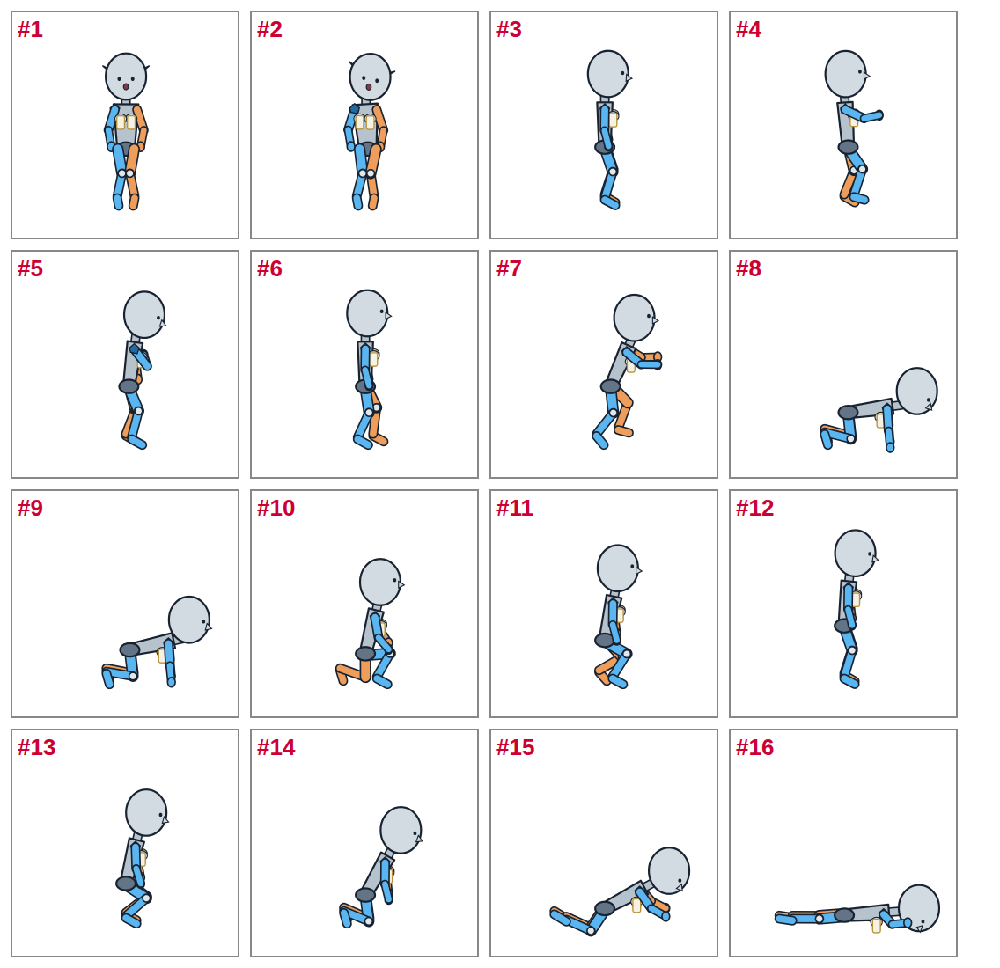
ポーズ一覧を保存

ぼーっと立ち尽くし、首をかしげてゆらゆら揺れる／思わず片手を伸ばして一歩寄り、手を胸に引っ込める／つまずいて手と膝をつき、起き上がる／力尽きて膝から崩れ、うつ伏せに倒れる：16枚 添付のポーズ一覧の番号どおりに、1枚ずつ別の画像で描いてください。決まりは最初の文のとおりです。 #1 → healer__daze_sway__front__0.png ぼーっと立ち尽くし、首をかしげてゆらゆら揺れる／向き：正面（こちらを向く）／8コマのうち1コマ目 体勢：立ち尽くす／腕：だらりと下げる／脚：立つ／動き：ぼーっとして、首を左右にかしげて揺れる 言葉：unfocused eyes, dazed expression, loose shoulders, absent-minded gaze, slow swaying, confused expression, slightly parted lips, weakened posture, furrowed brows #2 → healer__daze_sway__front__2.png ぼーっと立ち尽くし、首をかしげてゆらゆら揺れる／向き：正面（こちらを向く）／8コマのうち3コマ目 体勢：立ち尽くす／腕：だらりと下げる／脚：立つ／動き：ぼーっとして、首を左右にかしげて揺れる 言葉：unfocused eyes, dazed expression, loose shoulders, absent-minded gaze, slow swaying, confused expression, slightly parted lips, weakened posture, furrowed brows #3 → healer__reach_toward__right__0.png 思わず片手を伸ばして一歩寄り、手を胸に引っ込める／向き：真横（画面の右を向く横顔）／11コマのうち1コマ目（見る） 体勢：立つ／腕：片手を伸ばす → 胸に引っ込める／脚：一歩寄る／動き：何かに思わず手を伸ばす → はっとして目をそらす（真横から見た絵） 言葉：glowing turquoise mushroom cap, wet violet gills, soft turquoise glow, faint luminous haze, hesitant reaching gesture, unfocused eyes, dazed expression, slightly parted lips, weakened posture, confused expression, furrowed brows #4 → healer__reach_toward__right__4.png 思わず片手を伸ばして一歩寄り、手を胸に引っ込める／向き：真横（画面の右を向く横顔）／11コマのうち5コマ目（伸ばす） 体勢：立つ／腕：片手を伸ばす → 胸に引っ込める／脚：一歩寄る／動き：何かに思わず手を伸ばす → はっとして目をそらす（真横から見た絵） 言葉：glowing turquoise mushroom cap, wet violet gills, soft turquoise glow, faint luminous haze, hesitant reaching gesture, unfocused eyes, dazed expression, slightly parted lips, weakened posture, confused expression, furrowed brows #5 → healer__reach_toward__right__8.png 思わず片手を伸ばして一歩寄り、手を胸に引っ込める／向き：真横（画面の右を向く横顔）／11コマのうち9コマ目（引っ込める） 体勢：立つ／腕：片手を伸ばす → 胸に引っ込める／脚：一歩寄る／動き：何かに思わず手を伸ばす → はっとして目をそらす（真横から見た絵） 言葉：glowing turquoise mushroom cap, wet violet gills, soft turquoise glow, faint luminous haze, hesitant reaching gesture, unfocused eyes, dazed expression, slightly parted lips, weakened posture, confused expression, furrowed brows #6 → healer__trip_fall__right__0.png つまずいて手と膝をつき、起き上がる／向き：真横（画面の右を向く横顔）／23コマのうち1コマ目（歩く） 体勢：歩く → 四つん這い → 立つ／腕：前に出す → 手をつく／脚：つまずく → 膝をつく／動き：つまずいて転ぶ → 顔を上げる → 立ち上がる（真横から見た絵） 言葉：sudden stumble, startled expression, losing balance, bracing hands, weakened footing, recovering posture, exhausted expression, weakened posture, unsteady balance, heavy breathing, furrowed brows, strained face, losing strength #7 → healer__trip_fall__right__4.png つまずいて手と膝をつき、起き上がる／向き：真横（画面の右を向く横顔）／23コマのうち5コマ目（つまずく） 体勢：歩く → 四つん這い → 立つ／腕：前に出す → 手をつく／脚：つまずく → 膝をつく／動き：つまずいて転ぶ → 顔を上げる → 立ち上がる（真横から見た絵） 言葉：sudden stumble, startled expression, losing balance, bracing hands, weakened footing, recovering posture, exhausted expression, weakened posture, unsteady balance, heavy breathing, furrowed brows, strained face, losing strength #8 → healer__trip_fall__right__11.png つまずいて手と膝をつき、起き上がる／向き：真横（画面の右を向く横顔）／23コマのうち12コマ目（手をつく） 体勢：歩く → 四つん這い → 立つ／腕：前に出す → 手をつく／脚：つまずく → 膝をつく／動き：つまずいて転ぶ → 顔を上げる → 立ち上がる（真横から見た絵） 言葉：sudden stumble, startled expression, losing balance, bracing hands, weakened footing, recovering posture, exhausted expression, weakened posture, unsteady balance, heavy breathing, furrowed brows, strained face, losing strength #9 → healer__trip_fall__right__13.png つまずいて手と膝をつき、起き上がる／向き：真横（画面の右を向く横顔）／23コマのうち14コマ目（顔を上げる） 体勢：歩く → 四つん這い → 立つ／腕：前に出す → 手をつく／脚：つまずく → 膝をつく／動き：つまずいて転ぶ → 顔を上げる → 立ち上がる（真横から見た絵） 言葉：sudden stumble, startled expression, losing balance, bracing hands, weakened footing, recovering posture, exhausted expression, weakened posture, unsteady balance, heavy breathing, furrowed brows, strained face, losing strength #10 → healer__trip_fall__right__18.png つまずいて手と膝をつき、起き上がる／向き：真横（画面の右を向く横顔）／23コマのうち19コマ目（片膝） 体勢：歩く → 四つん這い → 立つ／腕：前に出す → 手をつく／脚：つまずく → 膝をつく／動き：つまずいて転ぶ → 顔を上げる → 立ち上がる（真横から見た絵） 言葉：sudden stumble, startled expression, losing balance, bracing hands, weakened footing, recovering posture, exhausted expression, weakened posture, unsteady balance, heavy breathing, furrowed brows, strained face, losing strength #11 → healer__trip_fall__right__20.png つまずいて手と膝をつき、起き上がる／向き：真横（画面の右を向く横顔）／23コマのうち21コマ目（立ち上がる） 体勢：歩く → 四つん這い → 立つ／腕：前に出す → 手をつく／脚：つまずく → 膝をつく／動き：つまずいて転ぶ → 顔を上げる → 立ち上がる（真横から見た絵） 言葉：sudden stumble, startled expression, losing balance, bracing hands, weakened footing, recovering posture, exhausted expression, weakened posture, unsteady balance, heavy breathing, furrowed brows, strained face, losing strength #12 → healer__defeat_collapse__right__0.png 力尽きて膝から崩れ、うつ伏せに倒れる／向き：真横（画面の右を向く横顔）／14コマのうち1コマ目（ふらつく） 体勢：立つ → 膝立ち → うつ伏せ／腕：だらりと下げる／脚：膝から崩れる／動き：力尽きて倒れ、動かなくなる（真横から見た絵） 言葉：fading strength, knees giving way, exhausted expression, slack shoulders, collapsing posture, unfocused eyes, weakened posture, unsteady balance, heavy breathing, furrowed brows, strained face, losing strength #13 → healer__defeat_collapse__right__2.png 力尽きて膝から崩れ、うつ伏せに倒れる／向き：真横（画面の右を向く横顔）／14コマのうち3コマ目（崩れる） 体勢：立つ → 膝立ち → うつ伏せ／腕：だらりと下げる／脚：膝から崩れる／動き：力尽きて倒れ、動かなくなる（真横から見た絵） 言葉：fading strength, knees giving way, exhausted expression, slack shoulders, collapsing posture, unfocused eyes, weakened posture, unsteady balance, heavy breathing, furrowed brows, strained face, losing strength #14 → healer__defeat_collapse__right__5.png 力尽きて膝から崩れ、うつ伏せに倒れる／向き：真横（画面の右を向く横顔）／14コマのうち6コマ目（膝をつく） 体勢：立つ → 膝立ち → うつ伏せ／腕：だらりと下げる／脚：膝から崩れる／動き：力尽きて倒れ、動かなくなる（真横から見た絵） 言葉：fading strength, knees giving way, exhausted expression, slack shoulders, collapsing posture, unfocused eyes, weakened posture, unsteady balance, heavy breathing, furrowed brows, strained face, losing strength #15 → healer__defeat_collapse__right__9.png 力尽きて膝から崩れ、うつ伏せに倒れる／向き：真横（画面の右を向く横顔）／14コマのうち10コマ目（倒れる） 体勢：立つ → 膝立ち → うつ伏せ／腕：だらりと下げる／脚：膝から崩れる／動き：力尽きて倒れ、動かなくなる（真横から見た絵） 言葉：fading strength, knees giving way, exhausted expression, slack shoulders, collapsing posture, unfocused eyes, weakened posture, unsteady balance, heavy breathing, furrowed brows, strained face, losing strength #16 → healer__defeat_collapse__right__13.png 力尽きて膝から崩れ、うつ伏せに倒れる／向き：真横（画面の右を向く横顔）／14コマのうち14コマ目（うつ伏せ） 体勢：立つ → 膝立ち → うつ伏せ／腕：だらりと下げる／脚：膝から崩れる／動き：力尽きて倒れ、動かなくなる（真横から見た絵） 言葉：fading strength, knees giving way, exhausted expression, slack shoulders, collapsing posture, unfocused eyes, weakened posture, unsteady balance, heavy breathing, furrowed brows, strained face, losing strength
6. 捕まった瞬間にびくっと跳ね、捕まった所を見下ろす 2枚
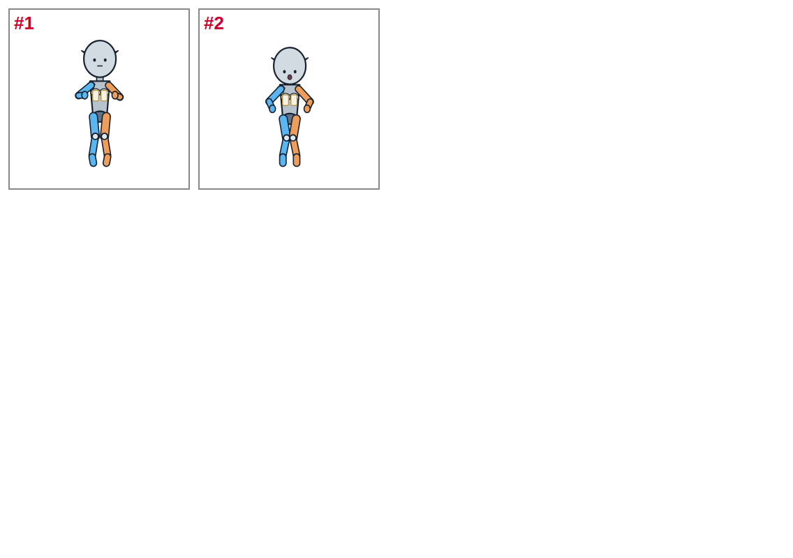
ポーズ一覧を保存

捕まった瞬間にびくっと跳ね、捕まった所を見下ろす：2枚 添付のポーズ一覧の番号どおりに、1枚ずつ別の画像で描いてください。決まりは最初の文のとおりです。 #1 → healer__grabbed_flinch__front__0.png 向き：正面（こちらを向く）／6コマのうち1コマ目（構え） 体勢：構えて立つ／腕：構える／脚：立つ／動き：捕まってびくっと跳ねる → 捕まった所を見下ろす 押さえられている所：どこか1か所 言葉：pale bluish-gray hand, short rounded nails, cool desaturated skin, firm sudden grip, startled reaction, looking toward grabbed area, tense startled expression, furrowed brows, clenched jaw, body suddenly tensed, resisting, alert eyes #2 → healer__grabbed_flinch__front__3.png 向き：正面（こちらを向く）／6コマのうち4コマ目（見下ろす） 体勢：構えて立つ／腕：構える／脚：立つ／動き：捕まってびくっと跳ねる → 捕まった所を見下ろす 押さえられている所：どこか1か所 言葉：pale bluish-gray hand, short rounded nails, cool desaturated skin, firm sudden grip, startled reaction, looking toward grabbed area, tense startled expression, furrowed brows, clenched jaw, body suddenly tensed, resisting, alert eyes
斥候（シーフ） 68枚・5回
最初に1回だけ送る文（見た目の画像を添付）
添付する画像：scout-source.png

これから、2Dゲームのキャラクターのアニメーション用の絵を、何枚かずつまとめてお願いします。 ・添付の画像のキャラクター「斥候」を、同じ絵柄・同じ頭身（小さめのデフォルメ）・同じ衣装と色で描いてください。 ・持ち物と特徴：右手にナイフ。大きなバックパック（上に丸めた寝袋）を背負う。大きな狐の耳と尻尾。 ・毎回、番号つきの「ポーズ一覧」の画像を添付し、番号ごとに向きと動きを書きます。番号1つにつき1枚の別々の画像を描いてください（1枚に並べない）。 ・姿勢・向き・手足と持ち物の位置は、ポーズ一覧の図（マネキン）に合わせてください。図の色の意味：青＝キャラクター本人の右半身、橙＝左半身、灰色＝胴と頭。図の線・色・関節の丸・番号は描かないでください。 ・1枚ごとに正方形（1024×1024）。全身が入るように上下左右に1割くらいの余白をとり、立っているときの足元は、どの絵も画像の下から1割くらいの高さにそろえてください。キャラクターの大きさも、どの絵でもそろえてください。 ・背景は透明（できなければ真っ白の無地）。影・床・効果線・文字・枠は描かないでください。 ・ファイル名は、番号ごとに指定する名前にしてください。できれば全部を1つのZIPにまとめてください。 ・描いた絵を縮小・減色・切り抜きしないでください（描いたままの PNG）。 ・今回は、何かに押さえられたり、床に倒れたりする場面の絵です。図の色の付いた線・輪・塊・泡などは、押さえているものの位置です。番号ごとに書く「押さえているものの見た目」で、その位置に一緒に描いてください（図と同じ色では描かない）。 ・「言葉」の欄は、見た目や顔・様子の言葉（英語）です。絵に反映してください。 ・描けない、または描かない方がよいと判断した番号は、飛ばしてかまいません。飛ばした番号と理由を、最後にまとめて教えてください。 わかったら「OK」とだけ返してください。
まとめて送る文（そのポーズ一覧を添付）
1. 押されて尻もちをつき、仰向けに倒れる／仰向けから起き上がる／後ろから腕ごと胴を抱きすくめられ、もがく／柔らかい塊に足元から腰まで沈んでいく 16枚
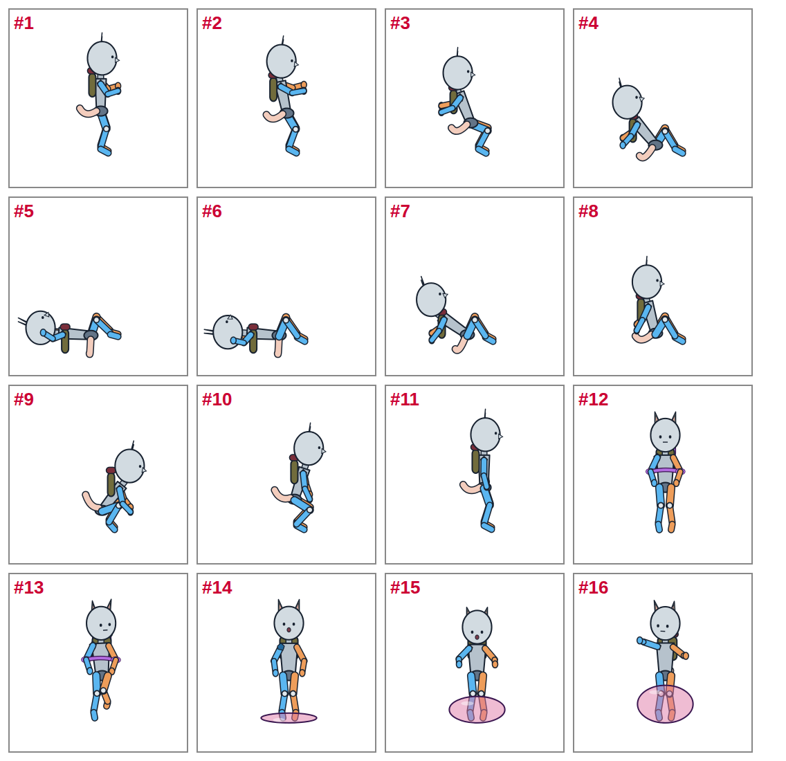
ポーズ一覧を保存

押されて尻もちをつき、仰向けに倒れる／仰向けから起き上がる／後ろから腕ごと胴を抱きすくめられ、もがく／柔らかい塊に足元から腰まで沈んでいく：16枚 添付のポーズ一覧の番号どおりに、1枚ずつ別の画像で描いてください。決まりは最初の文のとおりです。 #1 → scout__down_fall_back__right__0.png 押されて尻もちをつき、仰向けに倒れる／向き：真横（画面の右を向く横顔）／19コマのうち1コマ目（立つ） 体勢：立つ → 仰向け／腕：前に出す → 後ろにつく／脚：よろける／動き：押されてよろける → 尻もち → 仰向けに倒れる 言葉：translucent bright aqua water body, white foam rim, thick flowing water tendrils, forceful push from front, startled bracing reaction #2 → scout__down_fall_back__right__2.png 押されて尻もちをつき、仰向けに倒れる／向き：真横（画面の右を向く横顔）／19コマのうち3コマ目（押される） 体勢：立つ → 仰向け／腕：前に出す → 後ろにつく／脚：よろける／動き：押されてよろける → 尻もち → 仰向けに倒れる 言葉：translucent bright aqua water body, white foam rim, thick flowing water tendrils, forceful push from front, startled bracing reaction #3 → scout__down_fall_back__right__8.png 押されて尻もちをつき、仰向けに倒れる／向き：真横（画面の右を向く横顔）／19コマのうち9コマ目（よろける） 体勢：立つ → 仰向け／腕：前に出す → 後ろにつく／脚：よろける／動き：押されてよろける → 尻もち → 仰向けに倒れる 言葉：translucent bright aqua water body, white foam rim, thick flowing water tendrils, forceful push from front, startled bracing reaction #4 → scout__down_fall_back__right__12.png 押されて尻もちをつき、仰向けに倒れる／向き：真横（画面の右を向く横顔）／19コマのうち13コマ目（尻もち） 体勢：立つ → 仰向け／腕：前に出す → 後ろにつく／脚：よろける／動き：押されてよろける → 尻もち → 仰向けに倒れる 言葉：translucent bright aqua water body, white foam rim, thick flowing water tendrils, forceful push from front, startled bracing reaction #5 → scout__down_fall_back__right__17.png 押されて尻もちをつき、仰向けに倒れる／向き：真横（画面の右を向く横顔）／19コマのうち18コマ目（倒れる） 体勢：立つ → 仰向け／腕：前に出す → 後ろにつく／脚：よろける／動き：押されてよろける → 尻もち → 仰向けに倒れる 言葉：translucent bright aqua water body, white foam rim, thick flowing water tendrils, forceful push from front, startled bracing reaction #6 → scout__get_up__right__0.png 仰向けから起き上がる／向き：真横（画面の右を向く横顔）／19コマのうち1コマ目（仰向け） 体勢：仰向け → 立つ／腕：肘をつく → 手をつく／脚：膝を立てる → しゃがむ → 立つ／動き：起き上がって立つ（真横から見た絵） 言葉：refocusing eyes, pushing body upward, recovering balance, determined expression, steadying breath, alert expression returning, furrowed brows, regaining composure #7 → scout__get_up__right__4.png 仰向けから起き上がる／向き：真横（画面の右を向く横顔）／19コマのうち5コマ目（肘をつく） 体勢：仰向け → 立つ／腕：肘をつく → 手をつく／脚：膝を立てる → しゃがむ → 立つ／動き：起き上がって立つ（真横から見た絵） 言葉：refocusing eyes, pushing body upward, recovering balance, determined expression, steadying breath, alert expression returning, furrowed brows, regaining composure #8 → scout__get_up__right__8.png 仰向けから起き上がる／向き：真横（画面の右を向く横顔）／19コマのうち9コマ目（座る） 体勢：仰向け → 立つ／腕：肘をつく → 手をつく／脚：膝を立てる → しゃがむ → 立つ／動き：起き上がって立つ（真横から見た絵） 言葉：refocusing eyes, pushing body upward, recovering balance, determined expression, steadying breath, alert expression returning, furrowed brows, regaining composure #9 → scout__get_up__right__13.png 仰向けから起き上がる／向き：真横（画面の右を向く横顔）／19コマのうち14コマ目（しゃがむ） 体勢：仰向け → 立つ／腕：肘をつく → 手をつく／脚：膝を立てる → しゃがむ → 立つ／動き：起き上がって立つ（真横から見た絵） 言葉：refocusing eyes, pushing body upward, recovering balance, determined expression, steadying breath, alert expression returning, furrowed brows, regaining composure #10 → scout__get_up__right__16.png 仰向けから起き上がる／向き：真横（画面の右を向く横顔）／19コマのうち17コマ目（立ち上がる） 体勢：仰向け → 立つ／腕：肘をつく → 手をつく／脚：膝を立てる → しゃがむ → 立つ／動き：起き上がって立つ（真横から見た絵） 言葉：refocusing eyes, pushing body upward, recovering balance, determined expression, steadying breath, alert expression returning, furrowed brows, regaining composure #11 → scout__get_up__right__18.png 仰向けから起き上がる／向き：真横（画面の右を向く横顔）／19コマのうち19コマ目（立つ） 体勢：仰向け → 立つ／腕：肘をつく → 手をつく／脚：膝を立てる → しゃがむ → 立つ／動き：起き上がって立つ（真横から見た絵） 言葉：refocusing eyes, pushing body upward, recovering balance, determined expression, steadying breath, alert expression returning, furrowed brows, regaining composure #12 → scout__held_from_behind__front__0.png 後ろから腕ごと胴を抱きすくめられ、もがく／向き：正面（こちらを向く）／8コマのうち1コマ目 体勢：立つ／腕：体の横に押さえつけられる／脚：足を交互に蹴る／動き：身をよじる。足を蹴る。振り返る 押さえられている所：両肩・両肘（後ろから抱えられる） 押さえているものの見た目：large gray stone golem arms, rough stone surface, thick heavy forearms 言葉：large gray stone golem arms, rough stone surface, thick heavy forearms, arms and torso firmly held from behind, struggling #13 → scout__held_from_behind__front__2.png 後ろから腕ごと胴を抱きすくめられ、もがく／向き：正面（こちらを向く）／8コマのうち3コマ目 体勢：立つ／腕：体の横に押さえつけられる／脚：足を交互に蹴る／動き：身をよじる。足を蹴る。振り返る 押さえられている所：両肩・両肘（後ろから抱えられる） 押さえているものの見た目：large gray stone golem arms, rough stone surface, thick heavy forearms 言葉：large gray stone golem arms, rough stone surface, thick heavy forearms, arms and torso firmly held from behind, struggling #14 → scout__engulf_sink__front__0.png 柔らかい塊に足元から腰まで沈んでいく／向き：正面（こちらを向く）／10コマのうち1コマ目（足元） 体勢：立つ／腕：広げて釣り合いを取る／脚：足元 → 膝 → 太ももまで沈む／動き：下を見る。片脚を抜こうとするが抜けない 押さえられている所：足元から太もも（床の塊の中） 押さえているものの見た目：chrome-silver mirror slime, pale cyan reflections, smooth glossy surface, thick rounded slime mass 言葉：chrome-silver mirror slime, pale cyan reflections, smooth glossy surface, thick rounded slime mass, legs surrounded by soft slime #15 → scout__engulf_sink__front__3.png 柔らかい塊に足元から腰まで沈んでいく／向き：正面（こちらを向く）／10コマのうち4コマ目（膝まで） 体勢：立つ／腕：広げて釣り合いを取る／脚：足元 → 膝 → 太ももまで沈む／動き：下を見る。片脚を抜こうとするが抜けない 押さえられている所：足元から太もも（床の塊の中） 押さえているものの見た目：chrome-silver mirror slime, pale cyan reflections, smooth glossy surface, thick rounded slime mass 言葉：chrome-silver mirror slime, pale cyan reflections, smooth glossy surface, thick rounded slime mass, legs surrounded by soft slime #16 → scout__engulf_sink__front__6.png 柔らかい塊に足元から腰まで沈んでいく／向き：正面（こちらを向く）／10コマのうち7コマ目（もがく） 体勢：立つ／腕：広げて釣り合いを取る／脚：足元 → 膝 → 太ももまで沈む／動き：下を見る。片脚を抜こうとするが抜けない 押さえられている所：足元から太もも（床の塊の中） 押さえているものの見た目：chrome-silver mirror slime, pale cyan reflections, smooth glossy surface, thick rounded slime mass 言葉：chrome-silver mirror slime, pale cyan reflections, smooth glossy surface, thick rounded slime mass, legs surrounded by soft slime
2. 我に返って口元をぬぐい、一歩下がる／座り込んだ所から立ち上がる／腰まで沈んだまま、上体をひねって抜け出そうとする／足首をつかまれて後ろへ引かれ、よろけて四つん這いになる 15枚
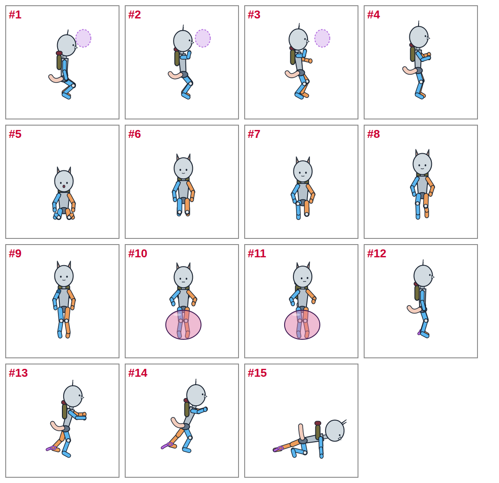
ポーズ一覧を保存

我に返って口元をぬぐい、一歩下がる／座り込んだ所から立ち上がる／腰まで沈んだまま、上体をひねって抜け出そうとする／足首をつかまれて後ろへ引かれ、よろけて四つん這いになる：15枚 添付のポーズ一覧の番号どおりに、1枚ずつ別の画像で描いてください。決まりは最初の文のとおりです。 #1 → scout__kiss_recover__right__0.png 我に返って口元をぬぐい、一歩下がる／向き：真横（画面の右を向く横顔）／11コマのうち1コマ目（ふらつく） 体勢：立つ／腕：手の甲で口をぬぐう。片手を前に出す／脚：一歩下がる／動き：我に返る → 口をぬぐう → 下がって構える 言葉：refocusing eyes, wiping mouth, alert expression, cautious backward step, defensive readiness, alert expression returning, furrowed brows, steadying breath, regaining composure, determined expression #2 → scout__kiss_recover__right__5.png 我に返って口元をぬぐい、一歩下がる／向き：真横（画面の右を向く横顔）／11コマのうち6コマ目（ぬぐう） 体勢：立つ／腕：手の甲で口をぬぐう。片手を前に出す／脚：一歩下がる／動き：我に返る → 口をぬぐう → 下がって構える 言葉：refocusing eyes, wiping mouth, alert expression, cautious backward step, defensive readiness, alert expression returning, furrowed brows, steadying breath, regaining composure, determined expression #3 → scout__kiss_recover__right__8.png 我に返って口元をぬぐい、一歩下がる／向き：真横（画面の右を向く横顔）／11コマのうち9コマ目（下がる） 体勢：立つ／腕：手の甲で口をぬぐう。片手を前に出す／脚：一歩下がる／動き：我に返る → 口をぬぐう → 下がって構える 言葉：refocusing eyes, wiping mouth, alert expression, cautious backward step, defensive readiness, alert expression returning, furrowed brows, steadying breath, regaining composure, determined expression #4 → scout__kiss_recover__right__10.png 我に返って口元をぬぐい、一歩下がる／向き：真横（画面の右を向く横顔）／11コマのうち11コマ目（構え） 体勢：立つ／腕：手の甲で口をぬぐう。片手を前に出す／脚：一歩下がる／動き：我に返る → 口をぬぐう → 下がって構える 言葉：refocusing eyes, wiping mouth, alert expression, cautious backward step, defensive readiness, alert expression returning, furrowed brows, steadying breath, regaining composure, determined expression #5 → scout__sit_recover__front__2.png 座り込んだ所から立ち上がる／向き：正面（こちらを向く）／14コマのうち3コマ目（手をつく） 体勢：女の子座り → 立つ／腕：前に手をつく／脚：膝立ち → 片膝 → 立つ／動き：立ち上がる 言葉：recovering strength, determined expression, pushing upward, unsteady balance, refocusing eyes, alert expression returning, furrowed brows, steadying breath, regaining composure #6 → scout__sit_recover__front__5.png 座り込んだ所から立ち上がる／向き：正面（こちらを向く）／14コマのうち6コマ目（膝立ち） 体勢：女の子座り → 立つ／腕：前に手をつく／脚：膝立ち → 片膝 → 立つ／動き：立ち上がる 言葉：recovering strength, determined expression, pushing upward, unsteady balance, refocusing eyes, alert expression returning, furrowed brows, steadying breath, regaining composure #7 → scout__sit_recover__front__9.png 座り込んだ所から立ち上がる／向き：正面（こちらを向く）／14コマのうち10コマ目（片膝） 体勢：女の子座り → 立つ／腕：前に手をつく／脚：膝立ち → 片膝 → 立つ／動き：立ち上がる 言葉：recovering strength, determined expression, pushing upward, unsteady balance, refocusing eyes, alert expression returning, furrowed brows, steadying breath, regaining composure #8 → scout__sit_recover__front__11.png 座り込んだ所から立ち上がる／向き：正面（こちらを向く）／14コマのうち12コマ目（立ち上がる） 体勢：女の子座り → 立つ／腕：前に手をつく／脚：膝立ち → 片膝 → 立つ／動き：立ち上がる 言葉：recovering strength, determined expression, pushing upward, unsteady balance, refocusing eyes, alert expression returning, furrowed brows, steadying breath, regaining composure #9 → scout__sit_recover__front__13.png 座り込んだ所から立ち上がる／向き：正面（こちらを向く）／14コマのうち14コマ目（立つ） 体勢：女の子座り → 立つ／腕：前に手をつく／脚：膝立ち → 片膝 → 立つ／動き：立ち上がる 言葉：recovering strength, determined expression, pushing upward, unsteady balance, refocusing eyes, alert expression returning, furrowed brows, steadying breath, regaining composure #10 → scout__engulf_struggle__front__0.png 腰まで沈んだまま、上体をひねって抜け出そうとする／向き：正面（こちらを向く）／8コマのうち1コマ目 体勢：腰まで埋まる／腕：片手ずつ塊を押す／脚：動かない／動き：上体をひねって抜け出そうとする 押さえられている所：腰から下（塊の中） 押さえているものの見た目：chrome-silver mirror slime, pale cyan reflections, smooth glossy surface, thick rounded slime mass 言葉：chrome-silver mirror slime, pale cyan reflections, smooth glossy surface, thick rounded slime mass, lower body trapped inside, twisting to escape #11 → scout__engulf_struggle__front__6.png 腰まで沈んだまま、上体をひねって抜け出そうとする／向き：正面（こちらを向く）／8コマのうち7コマ目 体勢：腰まで埋まる／腕：片手ずつ塊を押す／脚：動かない／動き：上体をひねって抜け出そうとする 押さえられている所：腰から下（塊の中） 押さえているものの見た目：chrome-silver mirror slime, pale cyan reflections, smooth glossy surface, thick rounded slime mass 言葉：chrome-silver mirror slime, pale cyan reflections, smooth glossy surface, thick rounded slime mass, lower body trapped inside, twisting to escape #12 → scout__ankle_grabbed__right__0.png 足首をつかまれて後ろへ引かれ、よろけて四つん這いになる／向き：真横（画面の右を向く横顔）／17コマのうち1コマ目（つかまれる） 体勢：立つ → 四つん這い／腕：振り回す → 両手をつく／脚：片足跳び → 片膝をつく／動き：足首をつかまれ後ろへ引かれる → 前のめり → 倒れる（真横から見た絵） 押さえられている所：左の足首（後ろから） 言葉：pale bluish-gray hand, short rounded nails, cool desaturated skin, firm grip around ankle, pulling backward, tense startled expression, furrowed brows, clenched jaw, body suddenly tensed, resisting, alert eyes #13 → scout__ankle_grabbed__right__4.png 足首をつかまれて後ろへ引かれ、よろけて四つん這いになる／向き：真横（画面の右を向く横顔）／17コマのうち5コマ目（引かれる） 体勢：立つ → 四つん這い／腕：振り回す → 両手をつく／脚：片足跳び → 片膝をつく／動き：足首をつかまれ後ろへ引かれる → 前のめり → 倒れる（真横から見た絵） 押さえられている所：左の足首（後ろから） 言葉：pale bluish-gray hand, short rounded nails, cool desaturated skin, firm grip around ankle, pulling backward, tense startled expression, furrowed brows, clenched jaw, body suddenly tensed, resisting, alert eyes #14 → scout__ankle_grabbed__right__6.png 足首をつかまれて後ろへ引かれ、よろけて四つん這いになる／向き：真横（画面の右を向く横顔）／17コマのうち7コマ目（片足跳び） 体勢：立つ → 四つん這い／腕：振り回す → 両手をつく／脚：片足跳び → 片膝をつく／動き：足首をつかまれ後ろへ引かれる → 前のめり → 倒れる（真横から見た絵） 押さえられている所：左の足首（後ろから） 言葉：pale bluish-gray hand, short rounded nails, cool desaturated skin, firm grip around ankle, pulling backward, tense startled expression, furrowed brows, clenched jaw, body suddenly tensed, resisting, alert eyes #15 → scout__ankle_grabbed__right__14.png 足首をつかまれて後ろへ引かれ、よろけて四つん這いになる／向き：真横（画面の右を向く横顔）／17コマのうち15コマ目（倒れる） 体勢：立つ → 四つん這い／腕：振り回す → 両手をつく／脚：片足跳び → 片膝をつく／動き：足首をつかまれ後ろへ引かれる → 前のめり → 倒れる（真横から見た絵） 押さえられている所：左の足首（後ろから） 言葉：pale bluish-gray hand, short rounded nails, cool desaturated skin, firm grip around ankle, pulling backward, tense startled expression, furrowed brows, clenched jaw, body suddenly tensed, resisting, alert eyes
3. 拘束を振りほどき、よろけてから構え直す／ふらっと一歩寄ってしまい、はっとする／見つめられて動けず、棒立ちのまま小さく頷く／胞子を吸い込み、口を覆って顔をそむけ、膝が内に折れる／自分の体を抱いて小刻みに震え、ときどき跳ねる／泡に包まれて床から浮き、体を丸めて口をぱくぱくさせる 15枚
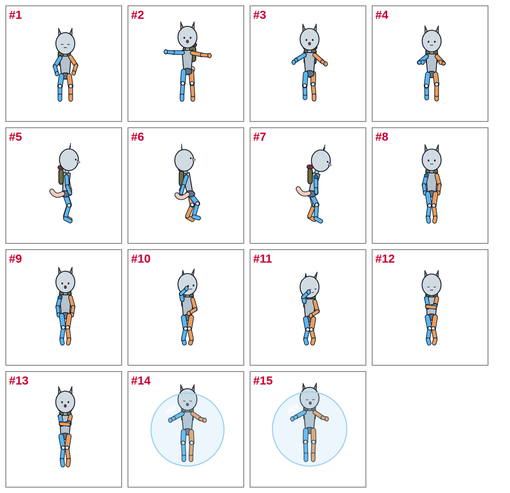
ポーズ一覧を保存

拘束を振りほどき、よろけてから構え直す／ふらっと一歩寄ってしまい、はっとする／見つめられて動けず、棒立ちのまま小さく頷く／胞子を吸い込み、口を覆って顔をそむけ、膝が内に折れる／自分の体を抱いて小刻みに震え、ときどき跳ねる／泡に包まれて床から浮き、体を丸めて口をぱくぱくさせる：15枚 添付のポーズ一覧の番号どおりに、1枚ずつ別の画像で描いてください。決まりは最初の文のとおりです。 #1 → scout__break_free__front__2.png 拘束を振りほどき、よろけてから構え直す／向き：正面（こちらを向く）／9コマのうち3コマ目（力む） 体勢：しゃがむ → 立つ／腕：大きく広げる → 構える／脚：一歩よろける／動き：力をためる → 振りほどく → よろける → 構え直す 押さえられている所：はじめだけ 言葉：thick dark violet rubbery tentacles, smooth rounded tentacles, wrapped around wrists, loosened restraint, tense startled expression, furrowed brows, clenched jaw, body suddenly tensed, resisting, alert eyes #2 → scout__break_free__front__3.png 拘束を振りほどき、よろけてから構え直す／向き：正面（こちらを向く）／9コマのうち4コマ目（振りほどく） 体勢：しゃがむ → 立つ／腕：大きく広げる → 構える／脚：一歩よろける／動き：力をためる → 振りほどく → よろける → 構え直す 押さえられている所：はじめだけ 言葉：thick dark violet rubbery tentacles, smooth rounded tentacles, wrapped around wrists, loosened restraint, tense startled expression, furrowed brows, clenched jaw, body suddenly tensed, resisting, alert eyes #3 → scout__break_free__front__6.png 拘束を振りほどき、よろけてから構え直す／向き：正面（こちらを向く）／9コマのうち7コマ目（よろける） 体勢：しゃがむ → 立つ／腕：大きく広げる → 構える／脚：一歩よろける／動き：力をためる → 振りほどく → よろける → 構え直す 押さえられている所：はじめだけ 言葉：thick dark violet rubbery tentacles, smooth rounded tentacles, wrapped around wrists, loosened restraint, tense startled expression, furrowed brows, clenched jaw, body suddenly tensed, resisting, alert eyes #4 → scout__break_free__front__8.png 拘束を振りほどき、よろけてから構え直す／向き：正面（こちらを向く）／9コマのうち9コマ目（構え直す） 体勢：しゃがむ → 立つ／腕：大きく広げる → 構える／脚：一歩よろける／動き：力をためる → 振りほどく → よろける → 構え直す 押さえられている所：はじめだけ 言葉：thick dark violet rubbery tentacles, smooth rounded tentacles, wrapped around wrists, loosened restraint, tense startled expression, furrowed brows, clenched jaw, body suddenly tensed, resisting, alert eyes #5 → scout__edge_pull__right__0.png ふらっと一歩寄ってしまい、はっとする／向き：真横（画面の右を向く横顔）／10コマのうち1コマ目（立つ） 体勢：立つ → 前屈み／腕：お腹を押さえる／脚：一歩前へ出てしまう／動き：一歩前へ寄ってしまう → はっとして前屈みになる 言葉：unfocused eyes, hesitant involuntary step, refocusing eyes, startled self-awareness, guarded expression, distant gaze, subdued expression, slightly parted lips, loose shoulders, absent-minded expression, faintly furrowed brows #6 → scout__edge_pull__right__3.png ふらっと一歩寄ってしまい、はっとする／向き：真横（画面の右を向く横顔）／10コマのうち4コマ目（腰が出る） 体勢：立つ → 前屈み／腕：お腹を押さえる／脚：一歩前へ出てしまう／動き：一歩前へ寄ってしまう → はっとして前屈みになる 言葉：unfocused eyes, hesitant involuntary step, refocusing eyes, startled self-awareness, guarded expression, distant gaze, subdued expression, slightly parted lips, loose shoulders, absent-minded expression, faintly furrowed brows #7 → scout__edge_pull__right__7.png ふらっと一歩寄ってしまい、はっとする／向き：真横（画面の右を向く横顔）／10コマのうち8コマ目（はっとする） 体勢：立つ → 前屈み／腕：お腹を押さえる／脚：一歩前へ出てしまう／動き：一歩前へ寄ってしまう → はっとして前屈みになる 言葉：unfocused eyes, hesitant involuntary step, refocusing eyes, startled self-awareness, guarded expression, distant gaze, subdued expression, slightly parted lips, loose shoulders, absent-minded expression, faintly furrowed brows #8 → scout__gaze_trance__front__0.png 見つめられて動けず、棒立ちのまま小さく頷く／向き：正面（こちらを向く）／8コマのうち1コマ目 体勢：棒立ち／腕：だらりと下げる／脚：立つ／動き：目の前の何かを見つめたまま、ゆっくり頷く。唇が動く 言葉：huge white eyeball, violet iris, wine-red membrane wings, hovering gaze, intense unbroken eye contact, faint violet glow, unfocused eyes, dazed expression, slightly parted lips, weakened posture, confused expression, furrowed brows #9 → scout__gaze_trance__front__1.png 見つめられて動けず、棒立ちのまま小さく頷く／向き：正面（こちらを向く）／8コマのうち2コマ目 体勢：棒立ち／腕：だらりと下げる／脚：立つ／動き：目の前の何かを見つめたまま、ゆっくり頷く。唇が動く 言葉：huge white eyeball, violet iris, wine-red membrane wings, hovering gaze, intense unbroken eye contact, faint violet glow, unfocused eyes, dazed expression, slightly parted lips, weakened posture, confused expression, furrowed brows #10 → scout__spore_inhale__front__0.png 胞子を吸い込み、口を覆って顔をそむけ、膝が内に折れる／向き：正面（こちらを向く）／8コマのうち1コマ目 体勢：立つ → 少し前屈み／腕：口を手で覆う／脚：膝が内に折れる／動き：顔をそむける → 吸い込んで咳き込む 言葉：mustard-yellow glowing spores, fine floating particles, amber glow, hazy spore cloud, drifting around face, coughing reaction, unfocused eyes, dazed expression, slightly parted lips, weakened posture, confused expression, furrowed brows #11 → scout__spore_inhale__front__2.png 胞子を吸い込み、口を覆って顔をそむけ、膝が内に折れる／向き：正面（こちらを向く）／8コマのうち3コマ目（吸う） 体勢：立つ → 少し前屈み／腕：口を手で覆う／脚：膝が内に折れる／動き：顔をそむける → 吸い込んで咳き込む 言葉：mustard-yellow glowing spores, fine floating particles, amber glow, hazy spore cloud, drifting around face, coughing reaction, unfocused eyes, dazed expression, slightly parted lips, weakened posture, confused expression, furrowed brows #12 → scout__shiver_hug__front__0.png 自分の体を抱いて小刻みに震え、ときどき跳ねる／向き：正面（こちらを向く）／8コマのうち1コマ目 体勢：立つ／腕：自分の体を抱く／脚：立つ／動き：肩をすくめて小刻みに震える。ときどき跳ねる 言葉：amber-brown shimmering scale dust, fine floating particles, faint cream shimmer, drifting powder surrounding body, trembling, unfocused eyes, dazed expression, slightly parted lips, weakened posture, confused expression, furrowed brows #13 → scout__shiver_hug__front__4.png 自分の体を抱いて小刻みに震え、ときどき跳ねる／向き：正面（こちらを向く）／8コマのうち5コマ目（跳ねる） 体勢：立つ／腕：自分の体を抱く／脚：立つ／動き：肩をすくめて小刻みに震える。ときどき跳ねる 言葉：amber-brown shimmering scale dust, fine floating particles, faint cream shimmer, drifting powder surrounding body, trembling, unfocused eyes, dazed expression, slightly parted lips, weakened posture, confused expression, furrowed brows #14 → scout__bubble_float__front__0.png 泡に包まれて床から浮き、体を丸めて口をぱくぱくさせる／向き：正面（こちらを向く）／8コマのうち1コマ目 体勢：泡の中で浮く。少し丸まる／腕：手のひらを泡の内側につく／脚：床から浮く／動き：口をぱくぱくさせる 押さえられている所：全身（泡の中） 言葉：large clear transparent bubble, pearly iridescent surface, clear bubbles, glossy curved surface, floating above floor, unfocused eyes, dazed expression, slightly parted lips, weakened posture, confused expression, furrowed brows #15 → scout__bubble_float__front__2.png 泡に包まれて床から浮き、体を丸めて口をぱくぱくさせる／向き：正面（こちらを向く）／8コマのうち3コマ目 体勢：泡の中で浮く。少し丸まる／腕：手のひらを泡の内側につく／脚：床から浮く／動き：口をぱくぱくさせる 押さえられている所：全身（泡の中） 言葉：large clear transparent bubble, pearly iridescent surface, clear bubbles, glossy curved surface, floating above floor, unfocused eyes, dazed expression, slightly parted lips, weakened posture, confused expression, furrowed brows
4. ぼーっと立ち尽くし、首をかしげてゆらゆら揺れる／思わず片手を伸ばして一歩寄り、手を胸に引っ込める／つまずいて手と膝をつき、起き上がる／力尽きて膝から崩れ、うつ伏せに倒れる 16枚
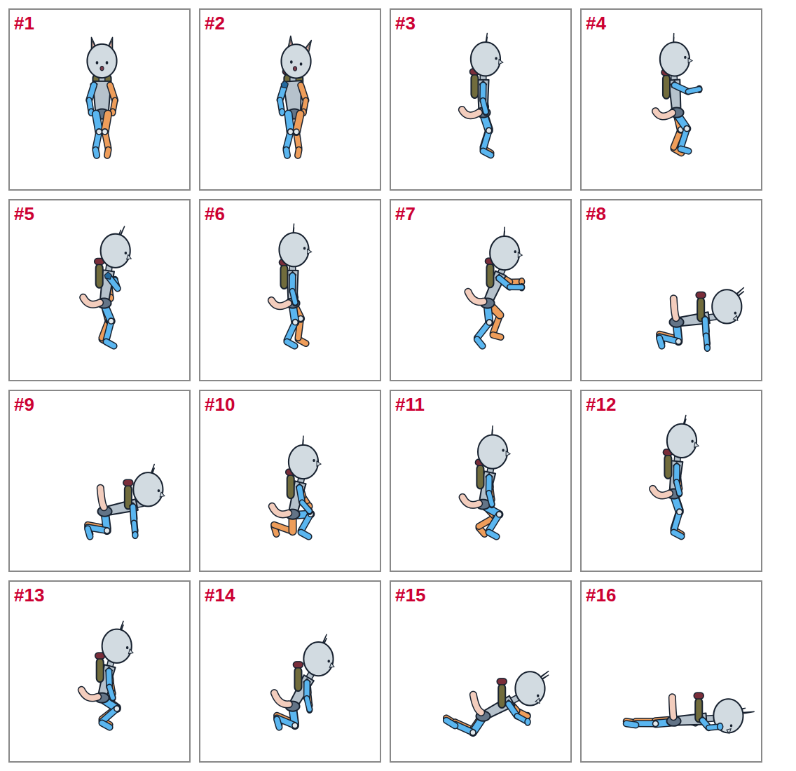
ポーズ一覧を保存

ぼーっと立ち尽くし、首をかしげてゆらゆら揺れる／思わず片手を伸ばして一歩寄り、手を胸に引っ込める／つまずいて手と膝をつき、起き上がる／力尽きて膝から崩れ、うつ伏せに倒れる：16枚 添付のポーズ一覧の番号どおりに、1枚ずつ別の画像で描いてください。決まりは最初の文のとおりです。 #1 → scout__daze_sway__front__0.png ぼーっと立ち尽くし、首をかしげてゆらゆら揺れる／向き：正面（こちらを向く）／8コマのうち1コマ目 体勢：立ち尽くす／腕：だらりと下げる／脚：立つ／動き：ぼーっとして、首を左右にかしげて揺れる 言葉：unfocused eyes, dazed expression, loose shoulders, absent-minded gaze, slow swaying, confused expression, slightly parted lips, weakened posture, furrowed brows #2 → scout__daze_sway__front__2.png ぼーっと立ち尽くし、首をかしげてゆらゆら揺れる／向き：正面（こちらを向く）／8コマのうち3コマ目 体勢：立ち尽くす／腕：だらりと下げる／脚：立つ／動き：ぼーっとして、首を左右にかしげて揺れる 言葉：unfocused eyes, dazed expression, loose shoulders, absent-minded gaze, slow swaying, confused expression, slightly parted lips, weakened posture, furrowed brows #3 → scout__reach_toward__right__0.png 思わず片手を伸ばして一歩寄り、手を胸に引っ込める／向き：真横（画面の右を向く横顔）／11コマのうち1コマ目（見る） 体勢：立つ／腕：片手を伸ばす → 胸に引っ込める／脚：一歩寄る／動き：何かに思わず手を伸ばす → はっとして目をそらす（真横から見た絵） 言葉：glowing turquoise mushroom cap, wet violet gills, soft turquoise glow, faint luminous haze, hesitant reaching gesture, unfocused eyes, dazed expression, slightly parted lips, weakened posture, confused expression, furrowed brows #4 → scout__reach_toward__right__4.png 思わず片手を伸ばして一歩寄り、手を胸に引っ込める／向き：真横（画面の右を向く横顔）／11コマのうち5コマ目（伸ばす） 体勢：立つ／腕：片手を伸ばす → 胸に引っ込める／脚：一歩寄る／動き：何かに思わず手を伸ばす → はっとして目をそらす（真横から見た絵） 言葉：glowing turquoise mushroom cap, wet violet gills, soft turquoise glow, faint luminous haze, hesitant reaching gesture, unfocused eyes, dazed expression, slightly parted lips, weakened posture, confused expression, furrowed brows #5 → scout__reach_toward__right__8.png 思わず片手を伸ばして一歩寄り、手を胸に引っ込める／向き：真横（画面の右を向く横顔）／11コマのうち9コマ目（引っ込める） 体勢：立つ／腕：片手を伸ばす → 胸に引っ込める／脚：一歩寄る／動き：何かに思わず手を伸ばす → はっとして目をそらす（真横から見た絵） 言葉：glowing turquoise mushroom cap, wet violet gills, soft turquoise glow, faint luminous haze, hesitant reaching gesture, unfocused eyes, dazed expression, slightly parted lips, weakened posture, confused expression, furrowed brows #6 → scout__trip_fall__right__0.png つまずいて手と膝をつき、起き上がる／向き：真横（画面の右を向く横顔）／23コマのうち1コマ目（歩く） 体勢：歩く → 四つん這い → 立つ／腕：前に出す → 手をつく／脚：つまずく → 膝をつく／動き：つまずいて転ぶ → 顔を上げる → 立ち上がる（真横から見た絵） 言葉：sudden stumble, startled expression, losing balance, bracing hands, weakened footing, recovering posture, exhausted expression, weakened posture, unsteady balance, heavy breathing, furrowed brows, strained face, losing strength #7 → scout__trip_fall__right__4.png つまずいて手と膝をつき、起き上がる／向き：真横（画面の右を向く横顔）／23コマのうち5コマ目（つまずく） 体勢：歩く → 四つん這い → 立つ／腕：前に出す → 手をつく／脚：つまずく → 膝をつく／動き：つまずいて転ぶ → 顔を上げる → 立ち上がる（真横から見た絵） 言葉：sudden stumble, startled expression, losing balance, bracing hands, weakened footing, recovering posture, exhausted expression, weakened posture, unsteady balance, heavy breathing, furrowed brows, strained face, losing strength #8 → scout__trip_fall__right__11.png つまずいて手と膝をつき、起き上がる／向き：真横（画面の右を向く横顔）／23コマのうち12コマ目（手をつく） 体勢：歩く → 四つん這い → 立つ／腕：前に出す → 手をつく／脚：つまずく → 膝をつく／動き：つまずいて転ぶ → 顔を上げる → 立ち上がる（真横から見た絵） 言葉：sudden stumble, startled expression, losing balance, bracing hands, weakened footing, recovering posture, exhausted expression, weakened posture, unsteady balance, heavy breathing, furrowed brows, strained face, losing strength #9 → scout__trip_fall__right__13.png つまずいて手と膝をつき、起き上がる／向き：真横（画面の右を向く横顔）／23コマのうち14コマ目（顔を上げる） 体勢：歩く → 四つん這い → 立つ／腕：前に出す → 手をつく／脚：つまずく → 膝をつく／動き：つまずいて転ぶ → 顔を上げる → 立ち上がる（真横から見た絵） 言葉：sudden stumble, startled expression, losing balance, bracing hands, weakened footing, recovering posture, exhausted expression, weakened posture, unsteady balance, heavy breathing, furrowed brows, strained face, losing strength #10 → scout__trip_fall__right__18.png つまずいて手と膝をつき、起き上がる／向き：真横（画面の右を向く横顔）／23コマのうち19コマ目（片膝） 体勢：歩く → 四つん這い → 立つ／腕：前に出す → 手をつく／脚：つまずく → 膝をつく／動き：つまずいて転ぶ → 顔を上げる → 立ち上がる（真横から見た絵） 言葉：sudden stumble, startled expression, losing balance, bracing hands, weakened footing, recovering posture, exhausted expression, weakened posture, unsteady balance, heavy breathing, furrowed brows, strained face, losing strength #11 → scout__trip_fall__right__20.png つまずいて手と膝をつき、起き上がる／向き：真横（画面の右を向く横顔）／23コマのうち21コマ目（立ち上がる） 体勢：歩く → 四つん這い → 立つ／腕：前に出す → 手をつく／脚：つまずく → 膝をつく／動き：つまずいて転ぶ → 顔を上げる → 立ち上がる（真横から見た絵） 言葉：sudden stumble, startled expression, losing balance, bracing hands, weakened footing, recovering posture, exhausted expression, weakened posture, unsteady balance, heavy breathing, furrowed brows, strained face, losing strength #12 → scout__defeat_collapse__right__0.png 力尽きて膝から崩れ、うつ伏せに倒れる／向き：真横（画面の右を向く横顔）／14コマのうち1コマ目（ふらつく） 体勢：立つ → 膝立ち → うつ伏せ／腕：だらりと下げる／脚：膝から崩れる／動き：力尽きて倒れ、動かなくなる（真横から見た絵） 言葉：fading strength, knees giving way, exhausted expression, slack shoulders, collapsing posture, unfocused eyes, weakened posture, unsteady balance, heavy breathing, furrowed brows, strained face, losing strength #13 → scout__defeat_collapse__right__2.png 力尽きて膝から崩れ、うつ伏せに倒れる／向き：真横（画面の右を向く横顔）／14コマのうち3コマ目（崩れる） 体勢：立つ → 膝立ち → うつ伏せ／腕：だらりと下げる／脚：膝から崩れる／動き：力尽きて倒れ、動かなくなる（真横から見た絵） 言葉：fading strength, knees giving way, exhausted expression, slack shoulders, collapsing posture, unfocused eyes, weakened posture, unsteady balance, heavy breathing, furrowed brows, strained face, losing strength #14 → scout__defeat_collapse__right__5.png 力尽きて膝から崩れ、うつ伏せに倒れる／向き：真横（画面の右を向く横顔）／14コマのうち6コマ目（膝をつく） 体勢：立つ → 膝立ち → うつ伏せ／腕：だらりと下げる／脚：膝から崩れる／動き：力尽きて倒れ、動かなくなる（真横から見た絵） 言葉：fading strength, knees giving way, exhausted expression, slack shoulders, collapsing posture, unfocused eyes, weakened posture, unsteady balance, heavy breathing, furrowed brows, strained face, losing strength #15 → scout__defeat_collapse__right__9.png 力尽きて膝から崩れ、うつ伏せに倒れる／向き：真横（画面の右を向く横顔）／14コマのうち10コマ目（倒れる） 体勢：立つ → 膝立ち → うつ伏せ／腕：だらりと下げる／脚：膝から崩れる／動き：力尽きて倒れ、動かなくなる（真横から見た絵） 言葉：fading strength, knees giving way, exhausted expression, slack shoulders, collapsing posture, unfocused eyes, weakened posture, unsteady balance, heavy breathing, furrowed brows, strained face, losing strength #16 → scout__defeat_collapse__right__13.png 力尽きて膝から崩れ、うつ伏せに倒れる／向き：真横（画面の右を向く横顔）／14コマのうち14コマ目（うつ伏せ） 体勢：立つ → 膝立ち → うつ伏せ／腕：だらりと下げる／脚：膝から崩れる／動き：力尽きて倒れ、動かなくなる（真横から見た絵） 言葉：fading strength, knees giving way, exhausted expression, slack shoulders, collapsing posture, unfocused eyes, weakened posture, unsteady balance, heavy breathing, furrowed brows, strained face, losing strength
5. 捕まった瞬間にびくっと跳ね、捕まった所を見下ろす／尻尾をつかまれて跳び上がり、手を後ろへやる 6枚
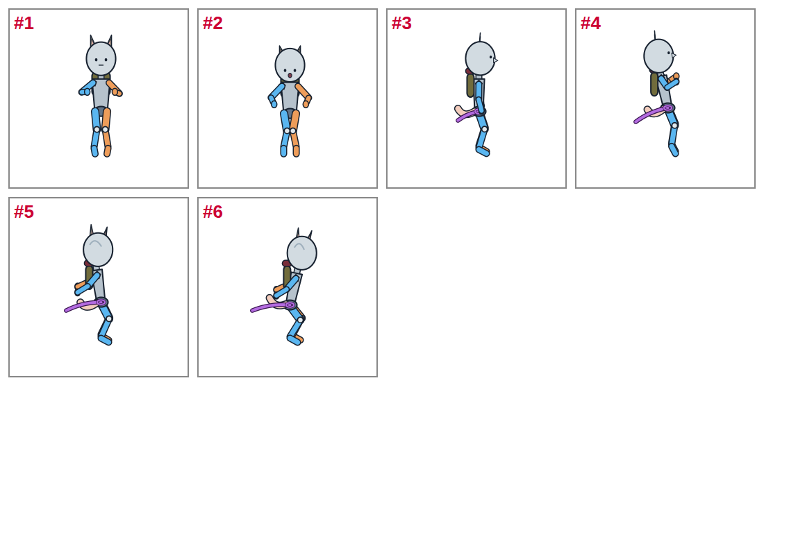
ポーズ一覧を保存

捕まった瞬間にびくっと跳ね、捕まった所を見下ろす／尻尾をつかまれて跳び上がり、手を後ろへやる：6枚 添付のポーズ一覧の番号どおりに、1枚ずつ別の画像で描いてください。決まりは最初の文のとおりです。 #1 → scout__grabbed_flinch__front__0.png 捕まった瞬間にびくっと跳ね、捕まった所を見下ろす／向き：正面（こちらを向く）／6コマのうち1コマ目（構え） 体勢：構えて立つ／腕：構える／脚：立つ／動き：捕まってびくっと跳ねる → 捕まった所を見下ろす 押さえられている所：どこか1か所 言葉：pale bluish-gray hand, short rounded nails, cool desaturated skin, firm sudden grip, startled reaction, looking toward grabbed area, tense startled expression, furrowed brows, clenched jaw, body suddenly tensed, resisting, alert eyes #2 → scout__grabbed_flinch__front__3.png 捕まった瞬間にびくっと跳ね、捕まった所を見下ろす／向き：正面（こちらを向く）／6コマのうち4コマ目（見下ろす） 体勢：構えて立つ／腕：構える／脚：立つ／動き：捕まってびくっと跳ねる → 捕まった所を見下ろす 押さえられている所：どこか1か所 言葉：pale bluish-gray hand, short rounded nails, cool desaturated skin, firm sudden grip, startled reaction, looking toward grabbed area, tense startled expression, furrowed brows, clenched jaw, body suddenly tensed, resisting, alert eyes #3 → scout__scout_tail_grabbed__right__0.png 尻尾をつかまれて跳び上がり、手を後ろへやる／向き：真横（画面の右を向く横顔）／8コマのうち1コマ目（立つ） 体勢：立つ／腕：両手を後ろへやる／脚：跳び上がって爪先立ち → 膝が内に崩れる／動き：尻尾をつかまれて跳び上がる → 振り返る → 引っぱり返す（真横から見た絵） 押さえられている所：尻尾（後ろから） 言葉：pale bluish-gray hand, short rounded nails, cool desaturated skin, firm grip around tail, pulling backward, startled reaction, tense startled expression, furrowed brows, clenched jaw, body suddenly tensed, resisting, alert eyes #4 → scout__scout_tail_grabbed__right__1.png 尻尾をつかまれて跳び上がり、手を後ろへやる／向き：真横（画面の右を向く横顔）／8コマのうち2コマ目（びくっ） 体勢：立つ／腕：両手を後ろへやる／脚：跳び上がって爪先立ち → 膝が内に崩れる／動き：尻尾をつかまれて跳び上がる → 振り返る → 引っぱり返す（真横から見た絵） 押さえられている所：尻尾（後ろから） 言葉：pale bluish-gray hand, short rounded nails, cool desaturated skin, firm grip around tail, pulling backward, startled reaction, tense startled expression, furrowed brows, clenched jaw, body suddenly tensed, resisting, alert eyes #5 → scout__scout_tail_grabbed__right__5.png 尻尾をつかまれて跳び上がり、手を後ろへやる／向き：真横（画面の右を向く横顔）／8コマのうち6コマ目（振り返る） 体勢：立つ／腕：両手を後ろへやる／脚：跳び上がって爪先立ち → 膝が内に崩れる／動き：尻尾をつかまれて跳び上がる → 振り返る → 引っぱり返す（真横から見た絵） 押さえられている所：尻尾（後ろから） 言葉：pale bluish-gray hand, short rounded nails, cool desaturated skin, firm grip around tail, pulling backward, startled reaction, tense startled expression, furrowed brows, clenched jaw, body suddenly tensed, resisting, alert eyes #6 → scout__scout_tail_grabbed__right__7.png 尻尾をつかまれて跳び上がり、手を後ろへやる／向き：真横（画面の右を向く横顔）／8コマのうち8コマ目（すくむ） 体勢：立つ／腕：両手を後ろへやる／脚：跳び上がって爪先立ち → 膝が内に崩れる／動き：尻尾をつかまれて跳び上がる → 振り返る → 引っぱり返す（真横から見た絵） 押さえられている所：尻尾（後ろから） 言葉：pale bluish-gray hand, short rounded nails, cool desaturated skin, firm grip around tail, pulling backward, startled reaction, tense startled expression, furrowed brows, clenched jaw, body suddenly tensed, resisting, alert eyes
魔法使い 66枚・5回
最初に1回だけ送る文（見た目の画像を添付）
添付する画像：witch-source.png

これから、2Dゲームのキャラクターのアニメーション用の絵を、何枚かずつまとめてお願いします。 ・添付の画像のキャラクター「魔法使い」を、同じ絵柄・同じ頭身（小さめのデフォルメ）・同じ衣装と色で描いてください。 ・持ち物と特徴：右手に紫の宝珠の杖。両腕の肘から先は金属の義腕。大きなとんがり帽子。 ・毎回、番号つきの「ポーズ一覧」の画像を添付し、番号ごとに向きと動きを書きます。番号1つにつき1枚の別々の画像を描いてください（1枚に並べない）。 ・姿勢・向き・手足と持ち物の位置は、ポーズ一覧の図（マネキン）に合わせてください。図の色の意味：青＝キャラクター本人の右半身、橙＝左半身、灰色＝胴と頭。図の線・色・関節の丸・番号は描かないでください。 ・1枚ごとに正方形（1024×1024）。全身が入るように上下左右に1割くらいの余白をとり、立っているときの足元は、どの絵も画像の下から1割くらいの高さにそろえてください。キャラクターの大きさも、どの絵でもそろえてください。 ・背景は透明（できなければ真っ白の無地）。影・床・効果線・文字・枠は描かないでください。 ・ファイル名は、番号ごとに指定する名前にしてください。できれば全部を1つのZIPにまとめてください。 ・描いた絵を縮小・減色・切り抜きしないでください（描いたままの PNG）。 ・今回は、何かに押さえられたり、床に倒れたりする場面の絵です。図の色の付いた線・輪・塊・泡などは、押さえているものの位置です。番号ごとに書く「押さえているものの見た目」で、その位置に一緒に描いてください（図と同じ色では描かない）。 ・「言葉」の欄は、見た目や顔・様子の言葉（英語）です。絵に反映してください。 ・描けない、または描かない方がよいと判断した番号は、飛ばしてかまいません。飛ばした番号と理由を、最後にまとめて教えてください。 わかったら「OK」とだけ返してください。
まとめて送る文（そのポーズ一覧を添付）
1. 押されて尻もちをつき、仰向けに倒れる／仰向けから起き上がる／後ろから腕ごと胴を抱きすくめられ、もがく／柔らかい塊に足元から腰まで沈んでいく 16枚
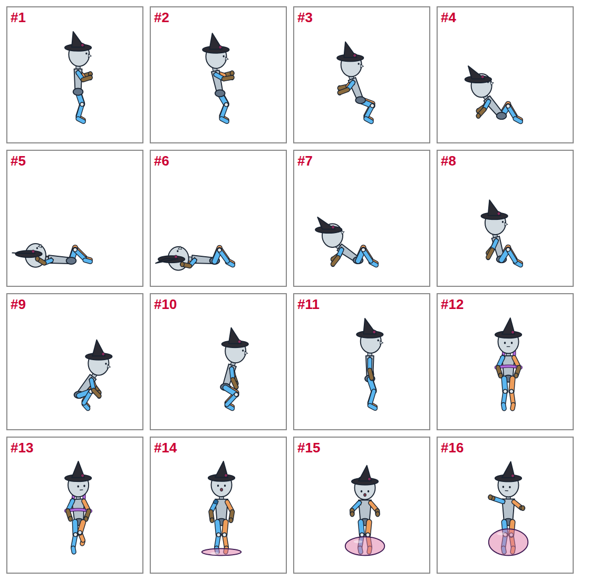
ポーズ一覧を保存

押されて尻もちをつき、仰向けに倒れる／仰向けから起き上がる／後ろから腕ごと胴を抱きすくめられ、もがく／柔らかい塊に足元から腰まで沈んでいく：16枚 添付のポーズ一覧の番号どおりに、1枚ずつ別の画像で描いてください。決まりは最初の文のとおりです。 #1 → mage__down_fall_back__right__0.png 押されて尻もちをつき、仰向けに倒れる／向き：真横（画面の右を向く横顔）／19コマのうち1コマ目（立つ） 体勢：立つ → 仰向け／腕：前に出す → 後ろにつく／脚：よろける／動き：押されてよろける → 尻もち → 仰向けに倒れる 言葉：translucent bright aqua water body, white foam rim, thick flowing water tendrils, forceful push from front, startled bracing reaction #2 → mage__down_fall_back__right__2.png 押されて尻もちをつき、仰向けに倒れる／向き：真横（画面の右を向く横顔）／19コマのうち3コマ目（押される） 体勢：立つ → 仰向け／腕：前に出す → 後ろにつく／脚：よろける／動き：押されてよろける → 尻もち → 仰向けに倒れる 言葉：translucent bright aqua water body, white foam rim, thick flowing water tendrils, forceful push from front, startled bracing reaction #3 → mage__down_fall_back__right__8.png 押されて尻もちをつき、仰向けに倒れる／向き：真横（画面の右を向く横顔）／19コマのうち9コマ目（よろける） 体勢：立つ → 仰向け／腕：前に出す → 後ろにつく／脚：よろける／動き：押されてよろける → 尻もち → 仰向けに倒れる 言葉：translucent bright aqua water body, white foam rim, thick flowing water tendrils, forceful push from front, startled bracing reaction #4 → mage__down_fall_back__right__12.png 押されて尻もちをつき、仰向けに倒れる／向き：真横（画面の右を向く横顔）／19コマのうち13コマ目（尻もち） 体勢：立つ → 仰向け／腕：前に出す → 後ろにつく／脚：よろける／動き：押されてよろける → 尻もち → 仰向けに倒れる 言葉：translucent bright aqua water body, white foam rim, thick flowing water tendrils, forceful push from front, startled bracing reaction #5 → mage__down_fall_back__right__17.png 押されて尻もちをつき、仰向けに倒れる／向き：真横（画面の右を向く横顔）／19コマのうち18コマ目（倒れる） 体勢：立つ → 仰向け／腕：前に出す → 後ろにつく／脚：よろける／動き：押されてよろける → 尻もち → 仰向けに倒れる 言葉：translucent bright aqua water body, white foam rim, thick flowing water tendrils, forceful push from front, startled bracing reaction #6 → mage__get_up__right__0.png 仰向けから起き上がる／向き：真横（画面の右を向く横顔）／19コマのうち1コマ目（仰向け） 体勢：仰向け → 立つ／腕：肘をつく → 手をつく／脚：膝を立てる → しゃがむ → 立つ／動き：起き上がって立つ（真横から見た絵） 言葉：refocusing eyes, pushing body upward, recovering balance, determined expression, steadying breath, alert expression returning, furrowed brows, regaining composure #7 → mage__get_up__right__4.png 仰向けから起き上がる／向き：真横（画面の右を向く横顔）／19コマのうち5コマ目（肘をつく） 体勢：仰向け → 立つ／腕：肘をつく → 手をつく／脚：膝を立てる → しゃがむ → 立つ／動き：起き上がって立つ（真横から見た絵） 言葉：refocusing eyes, pushing body upward, recovering balance, determined expression, steadying breath, alert expression returning, furrowed brows, regaining composure #8 → mage__get_up__right__8.png 仰向けから起き上がる／向き：真横（画面の右を向く横顔）／19コマのうち9コマ目（座る） 体勢：仰向け → 立つ／腕：肘をつく → 手をつく／脚：膝を立てる → しゃがむ → 立つ／動き：起き上がって立つ（真横から見た絵） 言葉：refocusing eyes, pushing body upward, recovering balance, determined expression, steadying breath, alert expression returning, furrowed brows, regaining composure #9 → mage__get_up__right__13.png 仰向けから起き上がる／向き：真横（画面の右を向く横顔）／19コマのうち14コマ目（しゃがむ） 体勢：仰向け → 立つ／腕：肘をつく → 手をつく／脚：膝を立てる → しゃがむ → 立つ／動き：起き上がって立つ（真横から見た絵） 言葉：refocusing eyes, pushing body upward, recovering balance, determined expression, steadying breath, alert expression returning, furrowed brows, regaining composure #10 → mage__get_up__right__16.png 仰向けから起き上がる／向き：真横（画面の右を向く横顔）／19コマのうち17コマ目（立ち上がる） 体勢：仰向け → 立つ／腕：肘をつく → 手をつく／脚：膝を立てる → しゃがむ → 立つ／動き：起き上がって立つ（真横から見た絵） 言葉：refocusing eyes, pushing body upward, recovering balance, determined expression, steadying breath, alert expression returning, furrowed brows, regaining composure #11 → mage__get_up__right__18.png 仰向けから起き上がる／向き：真横（画面の右を向く横顔）／19コマのうち19コマ目（立つ） 体勢：仰向け → 立つ／腕：肘をつく → 手をつく／脚：膝を立てる → しゃがむ → 立つ／動き：起き上がって立つ（真横から見た絵） 言葉：refocusing eyes, pushing body upward, recovering balance, determined expression, steadying breath, alert expression returning, furrowed brows, regaining composure #12 → mage__held_from_behind__front__0.png 後ろから腕ごと胴を抱きすくめられ、もがく／向き：正面（こちらを向く）／8コマのうち1コマ目 体勢：立つ／腕：体の横に押さえつけられる／脚：足を交互に蹴る／動き：身をよじる。足を蹴る。振り返る 押さえられている所：両肩・両肘（後ろから抱えられる） 押さえているものの見た目：large gray stone golem arms, rough stone surface, thick heavy forearms 言葉：large gray stone golem arms, rough stone surface, thick heavy forearms, arms and torso firmly held from behind, struggling #13 → mage__held_from_behind__front__2.png 後ろから腕ごと胴を抱きすくめられ、もがく／向き：正面（こちらを向く）／8コマのうち3コマ目 体勢：立つ／腕：体の横に押さえつけられる／脚：足を交互に蹴る／動き：身をよじる。足を蹴る。振り返る 押さえられている所：両肩・両肘（後ろから抱えられる） 押さえているものの見た目：large gray stone golem arms, rough stone surface, thick heavy forearms 言葉：large gray stone golem arms, rough stone surface, thick heavy forearms, arms and torso firmly held from behind, struggling #14 → mage__engulf_sink__front__0.png 柔らかい塊に足元から腰まで沈んでいく／向き：正面（こちらを向く）／10コマのうち1コマ目（足元） 体勢：立つ／腕：広げて釣り合いを取る／脚：足元 → 膝 → 太ももまで沈む／動き：下を見る。片脚を抜こうとするが抜けない 押さえられている所：足元から太もも（床の塊の中） 押さえているものの見た目：chrome-silver mirror slime, pale cyan reflections, smooth glossy surface, thick rounded slime mass 言葉：chrome-silver mirror slime, pale cyan reflections, smooth glossy surface, thick rounded slime mass, legs surrounded by soft slime #15 → mage__engulf_sink__front__3.png 柔らかい塊に足元から腰まで沈んでいく／向き：正面（こちらを向く）／10コマのうち4コマ目（膝まで） 体勢：立つ／腕：広げて釣り合いを取る／脚：足元 → 膝 → 太ももまで沈む／動き：下を見る。片脚を抜こうとするが抜けない 押さえられている所：足元から太もも（床の塊の中） 押さえているものの見た目：chrome-silver mirror slime, pale cyan reflections, smooth glossy surface, thick rounded slime mass 言葉：chrome-silver mirror slime, pale cyan reflections, smooth glossy surface, thick rounded slime mass, legs surrounded by soft slime #16 → mage__engulf_sink__front__6.png 柔らかい塊に足元から腰まで沈んでいく／向き：正面（こちらを向く）／10コマのうち7コマ目（もがく） 体勢：立つ／腕：広げて釣り合いを取る／脚：足元 → 膝 → 太ももまで沈む／動き：下を見る。片脚を抜こうとするが抜けない 押さえられている所：足元から太もも（床の塊の中） 押さえているものの見た目：chrome-silver mirror slime, pale cyan reflections, smooth glossy surface, thick rounded slime mass 言葉：chrome-silver mirror slime, pale cyan reflections, smooth glossy surface, thick rounded slime mass, legs surrounded by soft slime
2. 我に返って口元をぬぐい、一歩下がる／座り込んだ所から立ち上がる／腰まで沈んだまま、上体をひねって抜け出そうとする／足首をつかまれて後ろへ引かれ、よろけて四つん這いになる 15枚
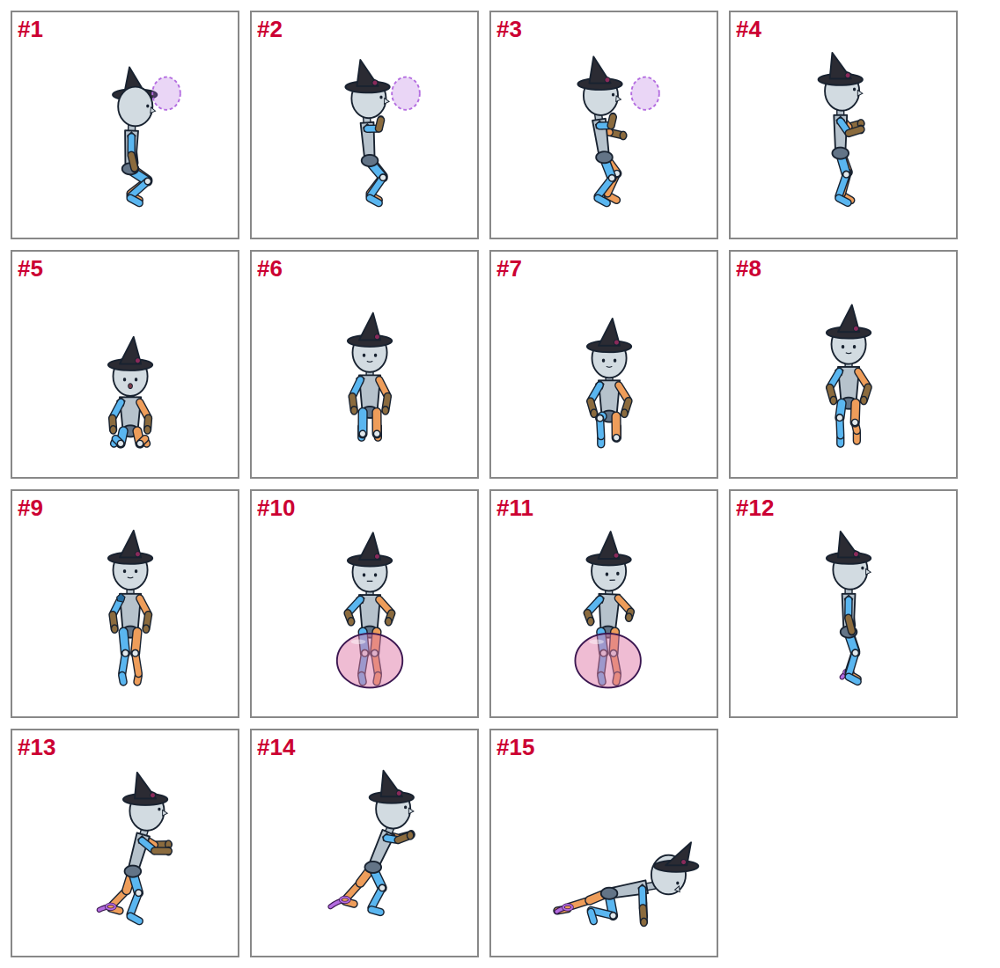
ポーズ一覧を保存

我に返って口元をぬぐい、一歩下がる／座り込んだ所から立ち上がる／腰まで沈んだまま、上体をひねって抜け出そうとする／足首をつかまれて後ろへ引かれ、よろけて四つん這いになる：15枚 添付のポーズ一覧の番号どおりに、1枚ずつ別の画像で描いてください。決まりは最初の文のとおりです。 #1 → mage__kiss_recover__right__0.png 我に返って口元をぬぐい、一歩下がる／向き：真横（画面の右を向く横顔）／11コマのうち1コマ目（ふらつく） 体勢：立つ／腕：手の甲で口をぬぐう。片手を前に出す／脚：一歩下がる／動き：我に返る → 口をぬぐう → 下がって構える 言葉：refocusing eyes, wiping mouth, alert expression, cautious backward step, defensive readiness, alert expression returning, furrowed brows, steadying breath, regaining composure, determined expression #2 → mage__kiss_recover__right__5.png 我に返って口元をぬぐい、一歩下がる／向き：真横（画面の右を向く横顔）／11コマのうち6コマ目（ぬぐう） 体勢：立つ／腕：手の甲で口をぬぐう。片手を前に出す／脚：一歩下がる／動き：我に返る → 口をぬぐう → 下がって構える 言葉：refocusing eyes, wiping mouth, alert expression, cautious backward step, defensive readiness, alert expression returning, furrowed brows, steadying breath, regaining composure, determined expression #3 → mage__kiss_recover__right__8.png 我に返って口元をぬぐい、一歩下がる／向き：真横（画面の右を向く横顔）／11コマのうち9コマ目（下がる） 体勢：立つ／腕：手の甲で口をぬぐう。片手を前に出す／脚：一歩下がる／動き：我に返る → 口をぬぐう → 下がって構える 言葉：refocusing eyes, wiping mouth, alert expression, cautious backward step, defensive readiness, alert expression returning, furrowed brows, steadying breath, regaining composure, determined expression #4 → mage__kiss_recover__right__10.png 我に返って口元をぬぐい、一歩下がる／向き：真横（画面の右を向く横顔）／11コマのうち11コマ目（構え） 体勢：立つ／腕：手の甲で口をぬぐう。片手を前に出す／脚：一歩下がる／動き：我に返る → 口をぬぐう → 下がって構える 言葉：refocusing eyes, wiping mouth, alert expression, cautious backward step, defensive readiness, alert expression returning, furrowed brows, steadying breath, regaining composure, determined expression #5 → mage__sit_recover__front__2.png 座り込んだ所から立ち上がる／向き：正面（こちらを向く）／14コマのうち3コマ目（手をつく） 体勢：女の子座り → 立つ／腕：前に手をつく／脚：膝立ち → 片膝 → 立つ／動き：立ち上がる 言葉：recovering strength, determined expression, pushing upward, unsteady balance, refocusing eyes, alert expression returning, furrowed brows, steadying breath, regaining composure #6 → mage__sit_recover__front__5.png 座り込んだ所から立ち上がる／向き：正面（こちらを向く）／14コマのうち6コマ目（膝立ち） 体勢：女の子座り → 立つ／腕：前に手をつく／脚：膝立ち → 片膝 → 立つ／動き：立ち上がる 言葉：recovering strength, determined expression, pushing upward, unsteady balance, refocusing eyes, alert expression returning, furrowed brows, steadying breath, regaining composure #7 → mage__sit_recover__front__9.png 座り込んだ所から立ち上がる／向き：正面（こちらを向く）／14コマのうち10コマ目（片膝） 体勢：女の子座り → 立つ／腕：前に手をつく／脚：膝立ち → 片膝 → 立つ／動き：立ち上がる 言葉：recovering strength, determined expression, pushing upward, unsteady balance, refocusing eyes, alert expression returning, furrowed brows, steadying breath, regaining composure #8 → mage__sit_recover__front__11.png 座り込んだ所から立ち上がる／向き：正面（こちらを向く）／14コマのうち12コマ目（立ち上がる） 体勢：女の子座り → 立つ／腕：前に手をつく／脚：膝立ち → 片膝 → 立つ／動き：立ち上がる 言葉：recovering strength, determined expression, pushing upward, unsteady balance, refocusing eyes, alert expression returning, furrowed brows, steadying breath, regaining composure #9 → mage__sit_recover__front__13.png 座り込んだ所から立ち上がる／向き：正面（こちらを向く）／14コマのうち14コマ目（立つ） 体勢：女の子座り → 立つ／腕：前に手をつく／脚：膝立ち → 片膝 → 立つ／動き：立ち上がる 言葉：recovering strength, determined expression, pushing upward, unsteady balance, refocusing eyes, alert expression returning, furrowed brows, steadying breath, regaining composure #10 → mage__engulf_struggle__front__0.png 腰まで沈んだまま、上体をひねって抜け出そうとする／向き：正面（こちらを向く）／8コマのうち1コマ目 体勢：腰まで埋まる／腕：片手ずつ塊を押す／脚：動かない／動き：上体をひねって抜け出そうとする 押さえられている所：腰から下（塊の中） 押さえているものの見た目：chrome-silver mirror slime, pale cyan reflections, smooth glossy surface, thick rounded slime mass 言葉：chrome-silver mirror slime, pale cyan reflections, smooth glossy surface, thick rounded slime mass, lower body trapped inside, twisting to escape #11 → mage__engulf_struggle__front__6.png 腰まで沈んだまま、上体をひねって抜け出そうとする／向き：正面（こちらを向く）／8コマのうち7コマ目 体勢：腰まで埋まる／腕：片手ずつ塊を押す／脚：動かない／動き：上体をひねって抜け出そうとする 押さえられている所：腰から下（塊の中） 押さえているものの見た目：chrome-silver mirror slime, pale cyan reflections, smooth glossy surface, thick rounded slime mass 言葉：chrome-silver mirror slime, pale cyan reflections, smooth glossy surface, thick rounded slime mass, lower body trapped inside, twisting to escape #12 → mage__ankle_grabbed__right__0.png 足首をつかまれて後ろへ引かれ、よろけて四つん這いになる／向き：真横（画面の右を向く横顔）／17コマのうち1コマ目（つかまれる） 体勢：立つ → 四つん這い／腕：振り回す → 両手をつく／脚：片足跳び → 片膝をつく／動き：足首をつかまれ後ろへ引かれる → 前のめり → 倒れる（真横から見た絵） 押さえられている所：左の足首（後ろから） 言葉：pale bluish-gray hand, short rounded nails, cool desaturated skin, firm grip around ankle, pulling backward, tense startled expression, furrowed brows, clenched jaw, body suddenly tensed, resisting, alert eyes #13 → mage__ankle_grabbed__right__4.png 足首をつかまれて後ろへ引かれ、よろけて四つん這いになる／向き：真横（画面の右を向く横顔）／17コマのうち5コマ目（引かれる） 体勢：立つ → 四つん這い／腕：振り回す → 両手をつく／脚：片足跳び → 片膝をつく／動き：足首をつかまれ後ろへ引かれる → 前のめり → 倒れる（真横から見た絵） 押さえられている所：左の足首（後ろから） 言葉：pale bluish-gray hand, short rounded nails, cool desaturated skin, firm grip around ankle, pulling backward, tense startled expression, furrowed brows, clenched jaw, body suddenly tensed, resisting, alert eyes #14 → mage__ankle_grabbed__right__6.png 足首をつかまれて後ろへ引かれ、よろけて四つん這いになる／向き：真横（画面の右を向く横顔）／17コマのうち7コマ目（片足跳び） 体勢：立つ → 四つん這い／腕：振り回す → 両手をつく／脚：片足跳び → 片膝をつく／動き：足首をつかまれ後ろへ引かれる → 前のめり → 倒れる（真横から見た絵） 押さえられている所：左の足首（後ろから） 言葉：pale bluish-gray hand, short rounded nails, cool desaturated skin, firm grip around ankle, pulling backward, tense startled expression, furrowed brows, clenched jaw, body suddenly tensed, resisting, alert eyes #15 → mage__ankle_grabbed__right__14.png 足首をつかまれて後ろへ引かれ、よろけて四つん這いになる／向き：真横（画面の右を向く横顔）／17コマのうち15コマ目（倒れる） 体勢：立つ → 四つん這い／腕：振り回す → 両手をつく／脚：片足跳び → 片膝をつく／動き：足首をつかまれ後ろへ引かれる → 前のめり → 倒れる（真横から見た絵） 押さえられている所：左の足首（後ろから） 言葉：pale bluish-gray hand, short rounded nails, cool desaturated skin, firm grip around ankle, pulling backward, tense startled expression, furrowed brows, clenched jaw, body suddenly tensed, resisting, alert eyes
3. 拘束を振りほどき、よろけてから構え直す／ふらっと一歩寄ってしまい、はっとする／見つめられて動けず、棒立ちのまま小さく頷く／胞子を吸い込み、口を覆って顔をそむけ、膝が内に折れる／自分の体を抱いて小刻みに震え、ときどき跳ねる／泡に包まれて床から浮き、体を丸めて口をぱくぱくさせる 15枚
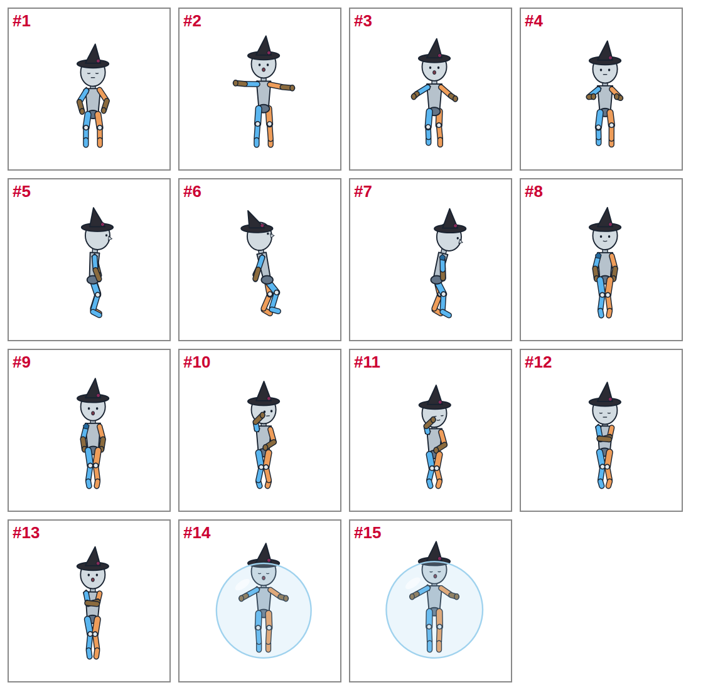
ポーズ一覧を保存

拘束を振りほどき、よろけてから構え直す／ふらっと一歩寄ってしまい、はっとする／見つめられて動けず、棒立ちのまま小さく頷く／胞子を吸い込み、口を覆って顔をそむけ、膝が内に折れる／自分の体を抱いて小刻みに震え、ときどき跳ねる／泡に包まれて床から浮き、体を丸めて口をぱくぱくさせる：15枚 添付のポーズ一覧の番号どおりに、1枚ずつ別の画像で描いてください。決まりは最初の文のとおりです。 #1 → mage__break_free__front__2.png 拘束を振りほどき、よろけてから構え直す／向き：正面（こちらを向く）／9コマのうち3コマ目（力む） 体勢：しゃがむ → 立つ／腕：大きく広げる → 構える／脚：一歩よろける／動き：力をためる → 振りほどく → よろける → 構え直す 押さえられている所：はじめだけ 言葉：thick dark violet rubbery tentacles, smooth rounded tentacles, wrapped around wrists, loosened restraint, tense startled expression, furrowed brows, clenched jaw, body suddenly tensed, resisting, alert eyes #2 → mage__break_free__front__3.png 拘束を振りほどき、よろけてから構え直す／向き：正面（こちらを向く）／9コマのうち4コマ目（振りほどく） 体勢：しゃがむ → 立つ／腕：大きく広げる → 構える／脚：一歩よろける／動き：力をためる → 振りほどく → よろける → 構え直す 押さえられている所：はじめだけ 言葉：thick dark violet rubbery tentacles, smooth rounded tentacles, wrapped around wrists, loosened restraint, tense startled expression, furrowed brows, clenched jaw, body suddenly tensed, resisting, alert eyes #3 → mage__break_free__front__6.png 拘束を振りほどき、よろけてから構え直す／向き：正面（こちらを向く）／9コマのうち7コマ目（よろける） 体勢：しゃがむ → 立つ／腕：大きく広げる → 構える／脚：一歩よろける／動き：力をためる → 振りほどく → よろける → 構え直す 押さえられている所：はじめだけ 言葉：thick dark violet rubbery tentacles, smooth rounded tentacles, wrapped around wrists, loosened restraint, tense startled expression, furrowed brows, clenched jaw, body suddenly tensed, resisting, alert eyes #4 → mage__break_free__front__8.png 拘束を振りほどき、よろけてから構え直す／向き：正面（こちらを向く）／9コマのうち9コマ目（構え直す） 体勢：しゃがむ → 立つ／腕：大きく広げる → 構える／脚：一歩よろける／動き：力をためる → 振りほどく → よろける → 構え直す 押さえられている所：はじめだけ 言葉：thick dark violet rubbery tentacles, smooth rounded tentacles, wrapped around wrists, loosened restraint, tense startled expression, furrowed brows, clenched jaw, body suddenly tensed, resisting, alert eyes #5 → mage__edge_pull__right__0.png ふらっと一歩寄ってしまい、はっとする／向き：真横（画面の右を向く横顔）／10コマのうち1コマ目（立つ） 体勢：立つ → 前屈み／腕：お腹を押さえる／脚：一歩前へ出てしまう／動き：一歩前へ寄ってしまう → はっとして前屈みになる 言葉：unfocused eyes, hesitant involuntary step, refocusing eyes, startled self-awareness, guarded expression, distant gaze, subdued expression, slightly parted lips, loose shoulders, absent-minded expression, faintly furrowed brows #6 → mage__edge_pull__right__3.png ふらっと一歩寄ってしまい、はっとする／向き：真横（画面の右を向く横顔）／10コマのうち4コマ目（腰が出る） 体勢：立つ → 前屈み／腕：お腹を押さえる／脚：一歩前へ出てしまう／動き：一歩前へ寄ってしまう → はっとして前屈みになる 言葉：unfocused eyes, hesitant involuntary step, refocusing eyes, startled self-awareness, guarded expression, distant gaze, subdued expression, slightly parted lips, loose shoulders, absent-minded expression, faintly furrowed brows #7 → mage__edge_pull__right__7.png ふらっと一歩寄ってしまい、はっとする／向き：真横（画面の右を向く横顔）／10コマのうち8コマ目（はっとする） 体勢：立つ → 前屈み／腕：お腹を押さえる／脚：一歩前へ出てしまう／動き：一歩前へ寄ってしまう → はっとして前屈みになる 言葉：unfocused eyes, hesitant involuntary step, refocusing eyes, startled self-awareness, guarded expression, distant gaze, subdued expression, slightly parted lips, loose shoulders, absent-minded expression, faintly furrowed brows #8 → mage__gaze_trance__front__0.png 見つめられて動けず、棒立ちのまま小さく頷く／向き：正面（こちらを向く）／8コマのうち1コマ目 体勢：棒立ち／腕：だらりと下げる／脚：立つ／動き：目の前の何かを見つめたまま、ゆっくり頷く。唇が動く 言葉：huge white eyeball, violet iris, wine-red membrane wings, hovering gaze, intense unbroken eye contact, faint violet glow, unfocused eyes, dazed expression, slightly parted lips, weakened posture, confused expression, furrowed brows #9 → mage__gaze_trance__front__1.png 見つめられて動けず、棒立ちのまま小さく頷く／向き：正面（こちらを向く）／8コマのうち2コマ目 体勢：棒立ち／腕：だらりと下げる／脚：立つ／動き：目の前の何かを見つめたまま、ゆっくり頷く。唇が動く 言葉：huge white eyeball, violet iris, wine-red membrane wings, hovering gaze, intense unbroken eye contact, faint violet glow, unfocused eyes, dazed expression, slightly parted lips, weakened posture, confused expression, furrowed brows #10 → mage__spore_inhale__front__0.png 胞子を吸い込み、口を覆って顔をそむけ、膝が内に折れる／向き：正面（こちらを向く）／8コマのうち1コマ目 体勢：立つ → 少し前屈み／腕：口を手で覆う／脚：膝が内に折れる／動き：顔をそむける → 吸い込んで咳き込む 言葉：mustard-yellow glowing spores, fine floating particles, amber glow, hazy spore cloud, drifting around face, coughing reaction, unfocused eyes, dazed expression, slightly parted lips, weakened posture, confused expression, furrowed brows #11 → mage__spore_inhale__front__2.png 胞子を吸い込み、口を覆って顔をそむけ、膝が内に折れる／向き：正面（こちらを向く）／8コマのうち3コマ目（吸う） 体勢：立つ → 少し前屈み／腕：口を手で覆う／脚：膝が内に折れる／動き：顔をそむける → 吸い込んで咳き込む 言葉：mustard-yellow glowing spores, fine floating particles, amber glow, hazy spore cloud, drifting around face, coughing reaction, unfocused eyes, dazed expression, slightly parted lips, weakened posture, confused expression, furrowed brows #12 → mage__shiver_hug__front__0.png 自分の体を抱いて小刻みに震え、ときどき跳ねる／向き：正面（こちらを向く）／8コマのうち1コマ目 体勢：立つ／腕：自分の体を抱く／脚：立つ／動き：肩をすくめて小刻みに震える。ときどき跳ねる 言葉：amber-brown shimmering scale dust, fine floating particles, faint cream shimmer, drifting powder surrounding body, trembling, unfocused eyes, dazed expression, slightly parted lips, weakened posture, confused expression, furrowed brows #13 → mage__shiver_hug__front__4.png 自分の体を抱いて小刻みに震え、ときどき跳ねる／向き：正面（こちらを向く）／8コマのうち5コマ目（跳ねる） 体勢：立つ／腕：自分の体を抱く／脚：立つ／動き：肩をすくめて小刻みに震える。ときどき跳ねる 言葉：amber-brown shimmering scale dust, fine floating particles, faint cream shimmer, drifting powder surrounding body, trembling, unfocused eyes, dazed expression, slightly parted lips, weakened posture, confused expression, furrowed brows #14 → mage__bubble_float__front__0.png 泡に包まれて床から浮き、体を丸めて口をぱくぱくさせる／向き：正面（こちらを向く）／8コマのうち1コマ目 体勢：泡の中で浮く。少し丸まる／腕：手のひらを泡の内側につく／脚：床から浮く／動き：口をぱくぱくさせる 押さえられている所：全身（泡の中） 言葉：large clear transparent bubble, pearly iridescent surface, clear bubbles, glossy curved surface, floating above floor, unfocused eyes, dazed expression, slightly parted lips, weakened posture, confused expression, furrowed brows #15 → mage__bubble_float__front__2.png 泡に包まれて床から浮き、体を丸めて口をぱくぱくさせる／向き：正面（こちらを向く）／8コマのうち3コマ目 体勢：泡の中で浮く。少し丸まる／腕：手のひらを泡の内側につく／脚：床から浮く／動き：口をぱくぱくさせる 押さえられている所：全身（泡の中） 言葉：large clear transparent bubble, pearly iridescent surface, clear bubbles, glossy curved surface, floating above floor, unfocused eyes, dazed expression, slightly parted lips, weakened posture, confused expression, furrowed brows
4. ぼーっと立ち尽くし、首をかしげてゆらゆら揺れる／思わず片手を伸ばして一歩寄り、手を胸に引っ込める／つまずいて手と膝をつき、起き上がる／力尽きて膝から崩れ、うつ伏せに倒れる 16枚

ポーズ一覧を保存
ぼーっと立ち尽くし、首をかしげてゆらゆら揺れる／思わず片手を伸ばして一歩寄り、手を胸に引っ込める／つまずいて手と膝をつき、起き上がる／力尽きて膝から崩れ、うつ伏せに倒れる：16枚 添付のポーズ一覧の番号どおりに、1枚ずつ別の画像で描いてください。決まりは最初の文のとおりです。 #1 → mage__daze_sway__front__0.png ぼーっと立ち尽くし、首をかしげてゆらゆら揺れる／向き：正面（こちらを向く）／8コマのうち1コマ目 体勢：立ち尽くす／腕：だらりと下げる／脚：立つ／動き：ぼーっとして、首を左右にかしげて揺れる 言葉：unfocused eyes, dazed expression, loose shoulders, absent-minded gaze, slow swaying, confused expression, slightly parted lips, weakened posture, furrowed brows #2 → mage__daze_sway__front__2.png ぼーっと立ち尽くし、首をかしげてゆらゆら揺れる／向き：正面（こちらを向く）／8コマのうち3コマ目 体勢：立ち尽くす／腕：だらりと下げる／脚：立つ／動き：ぼーっとして、首を左右にかしげて揺れる 言葉：unfocused eyes, dazed expression, loose shoulders, absent-minded gaze, slow swaying, confused expression, slightly parted lips, weakened posture, furrowed brows #3 → mage__reach_toward__right__0.png 思わず片手を伸ばして一歩寄り、手を胸に引っ込める／向き：真横（画面の右を向く横顔）／11コマのうち1コマ目（見る） 体勢：立つ／腕：片手を伸ばす → 胸に引っ込める／脚：一歩寄る／動き：何かに思わず手を伸ばす → はっとして目をそらす（真横から見た絵） 言葉：glowing turquoise mushroom cap, wet violet gills, soft turquoise glow, faint luminous haze, hesitant reaching gesture, unfocused eyes, dazed expression, slightly parted lips, weakened posture, confused expression, furrowed brows #4 → mage__reach_toward__right__4.png 思わず片手を伸ばして一歩寄り、手を胸に引っ込める／向き：真横（画面の右を向く横顔）／11コマのうち5コマ目（伸ばす） 体勢：立つ／腕：片手を伸ばす → 胸に引っ込める／脚：一歩寄る／動き：何かに思わず手を伸ばす → はっとして目をそらす（真横から見た絵） 言葉：glowing turquoise mushroom cap, wet violet gills, soft turquoise glow, faint luminous haze, hesitant reaching gesture, unfocused eyes, dazed expression, slightly parted lips, weakened posture, confused expression, furrowed brows #5 → mage__reach_toward__right__8.png 思わず片手を伸ばして一歩寄り、手を胸に引っ込める／向き：真横（画面の右を向く横顔）／11コマのうち9コマ目（引っ込める） 体勢：立つ／腕：片手を伸ばす → 胸に引っ込める／脚：一歩寄る／動き：何かに思わず手を伸ばす → はっとして目をそらす（真横から見た絵） 言葉：glowing turquoise mushroom cap, wet violet gills, soft turquoise glow, faint luminous haze, hesitant reaching gesture, unfocused eyes, dazed expression, slightly parted lips, weakened posture, confused expression, furrowed brows #6 → mage__trip_fall__right__0.png つまずいて手と膝をつき、起き上がる／向き：真横（画面の右を向く横顔）／23コマのうち1コマ目（歩く） 体勢：歩く → 四つん這い → 立つ／腕：前に出す → 手をつく／脚：つまずく → 膝をつく／動き：つまずいて転ぶ → 顔を上げる → 立ち上がる（真横から見た絵） 言葉：sudden stumble, startled expression, losing balance, bracing hands, weakened footing, recovering posture, exhausted expression, weakened posture, unsteady balance, heavy breathing, furrowed brows, strained face, losing strength #7 → mage__trip_fall__right__4.png つまずいて手と膝をつき、起き上がる／向き：真横（画面の右を向く横顔）／23コマのうち5コマ目（つまずく） 体勢：歩く → 四つん這い → 立つ／腕：前に出す → 手をつく／脚：つまずく → 膝をつく／動き：つまずいて転ぶ → 顔を上げる → 立ち上がる（真横から見た絵） 言葉：sudden stumble, startled expression, losing balance, bracing hands, weakened footing, recovering posture, exhausted expression, weakened posture, unsteady balance, heavy breathing, furrowed brows, strained face, losing strength #8 → mage__trip_fall__right__11.png つまずいて手と膝をつき、起き上がる／向き：真横（画面の右を向く横顔）／23コマのうち12コマ目（手をつく） 体勢：歩く → 四つん這い → 立つ／腕：前に出す → 手をつく／脚：つまずく → 膝をつく／動き：つまずいて転ぶ → 顔を上げる → 立ち上がる（真横から見た絵） 言葉：sudden stumble, startled expression, losing balance, bracing hands, weakened footing, recovering posture, exhausted expression, weakened posture, unsteady balance, heavy breathing, furrowed brows, strained face, losing strength #9 → mage__trip_fall__right__13.png つまずいて手と膝をつき、起き上がる／向き：真横（画面の右を向く横顔）／23コマのうち14コマ目（顔を上げる） 体勢：歩く → 四つん這い → 立つ／腕：前に出す → 手をつく／脚：つまずく → 膝をつく／動き：つまずいて転ぶ → 顔を上げる → 立ち上がる（真横から見た絵） 言葉：sudden stumble, startled expression, losing balance, bracing hands, weakened footing, recovering posture, exhausted expression, weakened posture, unsteady balance, heavy breathing, furrowed brows, strained face, losing strength #10 → mage__trip_fall__right__18.png つまずいて手と膝をつき、起き上がる／向き：真横（画面の右を向く横顔）／23コマのうち19コマ目（片膝） 体勢：歩く → 四つん這い → 立つ／腕：前に出す → 手をつく／脚：つまずく → 膝をつく／動き：つまずいて転ぶ → 顔を上げる → 立ち上がる（真横から見た絵） 言葉：sudden stumble, startled expression, losing balance, bracing hands, weakened footing, recovering posture, exhausted expression, weakened posture, unsteady balance, heavy breathing, furrowed brows, strained face, losing strength #11 → mage__trip_fall__right__20.png つまずいて手と膝をつき、起き上がる／向き：真横（画面の右を向く横顔）／23コマのうち21コマ目（立ち上がる） 体勢：歩く → 四つん這い → 立つ／腕：前に出す → 手をつく／脚：つまずく → 膝をつく／動き：つまずいて転ぶ → 顔を上げる → 立ち上がる（真横から見た絵） 言葉：sudden stumble, startled expression, losing balance, bracing hands, weakened footing, recovering posture, exhausted expression, weakened posture, unsteady balance, heavy breathing, furrowed brows, strained face, losing strength #12 → mage__defeat_collapse__right__0.png 力尽きて膝から崩れ、うつ伏せに倒れる／向き：真横（画面の右を向く横顔）／14コマのうち1コマ目（ふらつく） 体勢：立つ → 膝立ち → うつ伏せ／腕：だらりと下げる／脚：膝から崩れる／動き：力尽きて倒れ、動かなくなる（真横から見た絵） 言葉：fading strength, knees giving way, exhausted expression, slack shoulders, collapsing posture, unfocused eyes, weakened posture, unsteady balance, heavy breathing, furrowed brows, strained face, losing strength #13 → mage__defeat_collapse__right__2.png 力尽きて膝から崩れ、うつ伏せに倒れる／向き：真横（画面の右を向く横顔）／14コマのうち3コマ目（崩れる） 体勢：立つ → 膝立ち → うつ伏せ／腕：だらりと下げる／脚：膝から崩れる／動き：力尽きて倒れ、動かなくなる（真横から見た絵） 言葉：fading strength, knees giving way, exhausted expression, slack shoulders, collapsing posture, unfocused eyes, weakened posture, unsteady balance, heavy breathing, furrowed brows, strained face, losing strength #14 → mage__defeat_collapse__right__5.png 力尽きて膝から崩れ、うつ伏せに倒れる／向き：真横（画面の右を向く横顔）／14コマのうち6コマ目（膝をつく） 体勢：立つ → 膝立ち → うつ伏せ／腕：だらりと下げる／脚：膝から崩れる／動き：力尽きて倒れ、動かなくなる（真横から見た絵） 言葉：fading strength, knees giving way, exhausted expression, slack shoulders, collapsing posture, unfocused eyes, weakened posture, unsteady balance, heavy breathing, furrowed brows, strained face, losing strength #15 → mage__defeat_collapse__right__9.png 力尽きて膝から崩れ、うつ伏せに倒れる／向き：真横（画面の右を向く横顔）／14コマのうち10コマ目（倒れる） 体勢：立つ → 膝立ち → うつ伏せ／腕：だらりと下げる／脚：膝から崩れる／動き：力尽きて倒れ、動かなくなる（真横から見た絵） 言葉：fading strength, knees giving way, exhausted expression, slack shoulders, collapsing posture, unfocused eyes, weakened posture, unsteady balance, heavy breathing, furrowed brows, strained face, losing strength #16 → mage__defeat_collapse__right__13.png 力尽きて膝から崩れ、うつ伏せに倒れる／向き：真横（画面の右を向く横顔）／14コマのうち14コマ目（うつ伏せ） 体勢：立つ → 膝立ち → うつ伏せ／腕：だらりと下げる／脚：膝から崩れる／動き：力尽きて倒れ、動かなくなる（真横から見た絵） 言葉：fading strength, knees giving way, exhausted expression, slack shoulders, collapsing posture, unfocused eyes, weakened posture, unsteady balance, heavy breathing, furrowed brows, strained face, losing strength
5. 捕まった瞬間にびくっと跳ね、捕まった所を見下ろす／機械の手で口を押さえ、声を出さずに耐える 4枚
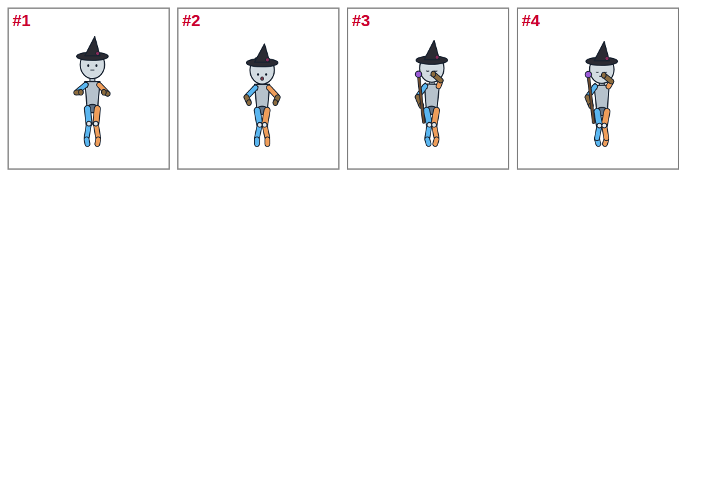
ポーズ一覧を保存

捕まった瞬間にびくっと跳ね、捕まった所を見下ろす／機械の手で口を押さえ、声を出さずに耐える：4枚 添付のポーズ一覧の番号どおりに、1枚ずつ別の画像で描いてください。決まりは最初の文のとおりです。 #1 → mage__grabbed_flinch__front__0.png 捕まった瞬間にびくっと跳ね、捕まった所を見下ろす／向き：正面（こちらを向く）／6コマのうち1コマ目（構え） 体勢：構えて立つ／腕：構える／脚：立つ／動き：捕まってびくっと跳ねる → 捕まった所を見下ろす 押さえられている所：どこか1か所 言葉：pale bluish-gray hand, short rounded nails, cool desaturated skin, firm sudden grip, startled reaction, looking toward grabbed area, tense startled expression, furrowed brows, clenched jaw, body suddenly tensed, resisting, alert eyes #2 → mage__grabbed_flinch__front__3.png 捕まった瞬間にびくっと跳ね、捕まった所を見下ろす／向き：正面（こちらを向く）／6コマのうち4コマ目（見下ろす） 体勢：構えて立つ／腕：構える／脚：立つ／動き：捕まってびくっと跳ねる → 捕まった所を見下ろす 押さえられている所：どこか1か所 言葉：pale bluish-gray hand, short rounded nails, cool desaturated skin, firm sudden grip, startled reaction, looking toward grabbed area, tense startled expression, furrowed brows, clenched jaw, body suddenly tensed, resisting, alert eyes #3 → mage__mage_suppress__front__0.png 機械の手で口を押さえ、声を出さずに耐える／向き：正面（こちらを向く）／8コマのうち1コマ目 体勢：立つ／腕：機械の手で自分の口を押さえる／脚：膝を閉じる／動き：声を出さずに耐える。震えを飲み込み、手を強く押し当てる 言葉：mechanical hand firmly covering own mouth, tense jaw, trembling shoulders, furrowed brows, controlled breathing, suppressing voice, tightly closed mouth, strained expression, trying to remain composed #4 → mage__mage_suppress__front__5.png 機械の手で口を押さえ、声を出さずに耐える／向き：正面（こちらを向く）／8コマのうち6コマ目（堪える） 体勢：立つ／腕：機械の手で自分の口を押さえる／脚：膝を閉じる／動き：声を出さずに耐える。震えを飲み込み、手を強く押し当てる 言葉：mechanical hand firmly covering own mouth, tense jaw, trembling shoulders, furrowed brows, controlled breathing, suppressing voice, tightly closed mouth, strained expression, trying to remain composed